A PROJECT REPORT ON
HYDRO RAIN GUARD:
INTELLIGENT RAINWATER HARVESTING AND
ARTIFICIAL GROUNDWATER RECHARGE
ASSESSMENT SYSTEM
SUBMITTED TO THE SAVITRIBAI PHULE PUNE UNIVERSITY, PUNE
IN THE PARTIAL FULFILLMENT OF THE REQUIREMENTS
FOR THE AWARD OF THE DEGREE
OF
BACHELOR OF TECHNOLOGY
(INFORMATION TECHNOLOGY)
SUBMITTED BY
MR. SHUBHAM DESAI ROLL NO: __________ EXAM NO: __________
MR. SIDDHESH MAHADIK ROLL NO: __________ EXAM NO: __________
MR. KAUSHAL AGALE ROLL NO: __________ EXAM NO: __________
MR. OMKAR KSHIRSAGAR ROLL NO: __________ EXAM NO: __________
DEPARTMENT OF INFORMATION TECHNOLOGY
JSPM'S RAJARSHI SHAHU COLLEGE OF ENGINEERING
TATHAWADE, PUNE 411033
(AN AUTONOMOUS INSTITUTE AFFILIATED TO SAVITRIBAI PHULE PUNE UNIVERSITY, PUNE)
2026-2027
CERTIFICATE
This is to certify that the project report entitled
“HYDRO RAIN GUARD: INTELLIGENT RAINWATER HARVESTING AND ARTIFICIAL GROUNDWATER RECHARGE ASSESSMENT SYSTEM”
Submitted by
MR. SHUBHAM DESAI ROLL NO: __________ EXAM NO: __________
MR. SIDDHESH MAHADIK ROLL NO: __________ EXAM NO: __________
MR. KAUSHAL AGALE ROLL NO: __________ EXAM NO: __________
MR. OMKAR KSHIRSAGAR ROLL NO: __________ EXAM NO: __________
is a bonafide student of this institute and the work has been carried out by them under the supervision of Dr. Dipali H. Patil and is approved for the partial fulfillment of the requirement of Savitribai Phule Pune University, Pune, for the award of the degree of Bachelor of Technology (Information Technology).
(Dr. Dipali H. Patil)
Guide
(Dr. N. M. Ranjan)
Head, Department of Information Technology
Name & Signature of External Examiner: ______________________________
(Dr. A. M. Badadhe)
Director, JSPM's Rajarshi Shahu College of Engineering, Pune - 33
Place: Pune Date: ____________________
Note: Industry certificate is not applicable; this is an institute-sponsored academic project.
ACKNOWLEDGEMENT
We express our sincere gratitude to our project guide, Dr. Dipali H. Patil, for continuous guidance, technical insight and constructive review throughout the project. The guidance helped us connect hydrological theory, software architecture and research writing into a single coherent Stage-II submission.
We are grateful to Dr. N. M. Ranjan, Head of the Department of Information Technology, for providing academic support and encouragement, and to Dr. A. M. Badadhe, Director of JSPM's Rajarshi Shahu College of Engineering, for the institutional facilities and environment that made this work possible. We also thank the faculty members of the department for their valuable suggestions during reviews and evaluations.
We acknowledge the open-source communities behind FastAPI, Next.js, ReportLab, HarfBuzz, Leaflet, react-three-fiber, pytest and the public NOAA PSL CMAP precipitation dataset. Their documented work enabled a transparent and reproducible implementation. Finally, we thank our families and classmates for their patience and support during development, testing and report preparation.
NAME OF THE STUDENTS
MR. SHUBHAM DESAI (ROLL NO: __________)
MR. SIDDHESH MAHADIK (ROLL NO: __________)
MR. KAUSHAL AGALE (ROLL NO: __________)
MR. OMKAR KSHIRSAGAR (ROLL NO: __________)
ABSTRACT
Urban groundwater stress is intensified by impervious surfaces, variable monsoon rainfall and dependence on manual hydrological calculations. This project presents HYDRO RAIN GUARD, a full-stack decision-support system that converts site inputs into an auditable rooftop rainwater-harvesting and artificial-recharge assessment. A three-step web wizard captures roof, soil, groundwater and location data; a gridded precipitation climatology supplies monthly rainfall with a local annual-total override; and deterministic services compute Rational-method runoff, an SCS Curve Number cross-check, first-flush loss, soil-limited recharge potential, structure dimensions and lifecycle economics. Recommendations are ranked by the Analytic Hierarchy Process, with weights, matrix, lambda-max, consistency index and consistency ratio exposed for review. Results are presented through interactive charts, a scaled three-dimensional scene with WebXR support, and a multi-page PDF that correctly shapes English, Hindi and Marathi text. The implementation was verified with 38 passing backend tests and a successful Next.js production build. A representative Pune assessment produced 63.0 KL annual runoff, 43.0 KL harvestable water, 24.5 KL recharge potential and a rooftop storage tank ranked first at 93/100. The system therefore demonstrates a transparent, reproducible and extensible foundation for sustainable urban water planning.
Keywords: Rooftop rainwater harvesting; artificial recharge; GIS; hydrological modelling; AHP; SCS Curve Number; Augmented Reality; decision support; FastAPI; Next.js.
TABLE OF CONTENTS
| SR. NO. | TITLE OF CHAPTER / SECTION | PAGE NO. |
|---|---|---|
| CERTIFICATE | i | |
| ACKNOWLEDGEMENT | ii | |
| ABSTRACT | iii | |
| TABLE OF CONTENTS | iv | |
| LIST OF ABBREVIATIONS | vi | |
| NOMENCLATURE | vii | |
| LIST OF FIGURES | viii | |
| LIST OF TABLES | x | |
| 1 | 1 INTRODUCTION | 1 |
| 1.1 Water Security and Urban Context | 1 | |
| 1.2 Motivation and Stakeholder Need | 2 | |
| 1.3 Aim and Objectives | 3 | |
| 2 | 2 LITERATURE SURVEY | 6 |
| 2.1 Systematic Review Methodology | 6 | |
| 2.2 Hydrological Modelling Studies | 7 | |
| 2.3 GIS, Remote Sensing and Rainfall Data | 8 | |
| 3 | 3 PROBLEM STATEMENT | 13 |
| 3.1 Detailed Problem Definition | 13 | |
| 3.2 Limitations of the Existing Manual System | 14 | |
| 3.3 Proposed Solution | 15 | |
| 4 | 4 SOFTWARE REQUIREMENTS SPECIFICATION | 17 |
| 4.1 Introduction and Project Scope | 17 | |
| 4.2 User Classes and Characteristics | 18 | |
| 4.3 Functional Requirements Overview | 19 | |
| 5 | 5 SYSTEM DESIGN | 26 |
| 5.1 System Architecture | 26 | |
| 5.2 Frontend Design | 27 | |
| 5.3 Backend API Design | 28 | |
| 6 | 6 PROJECT IMPLEMENTATION | 38 |
| 6.1 Implementation Overview | 38 | |
| 6.2 Landing and About Pages | 39 | |
| 6.3 Assessment Wizard - Basic Information | 40 | |
| 7 | 7 SOFTWARE TESTING | 49 |
TABLE OF CONTENTS (CONTINUED)
| SR. NO. | TITLE OF CHAPTER / SECTION | PAGE NO. |
|---|---|---|
| 7.1 Testing Strategy and Experimental Setup | 49 | |
| 7.2 Unit Test Cases and Results | 50 | |
| 7.3 API Integration Test Cases | 51 | |
| 8 | 8 RESULTS AND DISCUSSION | 55 |
| 8.1 Experimental Setup and Scenarios | 55 | |
| 8.2 Reference Pune Assessment | 56 | |
| 8.3 Monthly Rainfall and Runoff Analysis | 57 | |
| 9 | 9 OTHER SPECIFICATIONS | 62 |
| 9.1 Advantages | 62 | |
| 9.2 Limitations | 63 | |
| 9.3 Applications | 64 | |
| 10 | 10 PROJECT PLAN | 65 |
| 10.1 Phases and Timeline | 65 | |
| 10.2 Work Allocation | 66 | |
| 10.3 Current Stage-II Status | 67 | |
| 11 | 11 CONCLUSIONS AND FUTURE WORK | 68 |
| 11.1 Conclusion | 68 | |
| 11.2 Critical Evaluation | 69 | |
| 11.3 Limitations | 70 | |
| A | APPENDIX A | 72 |
| A.1 Survey Paper Details | 72 | |
| B | APPENDIX B | 74 |
| B.1 Implementation Paper and Project Details | 74 | |
| C | APPENDIX C | 75 |
| C.1 Plagiarism Check Report | 75 | |
| D | APPENDIX D | 76 |
| D.1 Sample Generated Assessment Report | 76 | |
| E | APPENDIX E | 77 |
| E.1 Detailed Test and Build Evidence | 77 | |
| F | APPENDIX F | 78 |
| F.1 Use Case Details and Deployment Status | 78 | |
| 12 | 12 REFERENCES | 79 |
| 12.3 Bibliography | 81 |
LIST OF ABBREVIATIONS
| ABBREVIATION | ILLUSTRATION | ABBREVIATION | ILLUSTRATION |
|---|---|---|---|
| AI | Artificial Intelligence | IMD | India Meteorological Department |
| AHP | Analytic Hierarchy Process | IoT | Internet of Things |
| API | Application Programming Interface | JSON | JavaScript Object Notation |
| AR | Augmented Reality | MCDA | Multi-Criteria Decision Analysis |
| BIS | Bureau of Indian Standards | NOAA | National Oceanic and Atmospheric Administration |
| CEEW | Council on Energy, Environment and Water | ORM | Object-Relational Mapping |
| CGWB | Central Ground Water Board | OSM | OpenStreetMap |
| CI | Consistency Index | Portable Document Format | |
| CMAP | CPC Merged Analysis of Precipitation | ROI | Return on Investment |
| CN | Curve Number | RTRWH | Rooftop Rainwater Harvesting |
| CR | Consistency Ratio | SCS | Soil Conservation Service |
| CSS | Cascading Style Sheets | SDLC | Software Development Life Cycle |
| DFD | Data Flow Diagram | SRS | Software Requirements Specification |
| DTO | Data Transfer Object | TS | TypeScript |
| ER | Entity Relationship | UML | Unified Modeling Language |
| GIS | Geographic Information System | URL | Uniform Resource Locator |
| HTTP | Hypertext Transfer Protocol | WebXR | Web Extended Reality |
| IEEE | Institute of Electrical and Electronics Engineers | XR | Extended Reality |
NOMENCLATURE
The following symbols and notations are used in this report. All symbolic definitions are confined to this section in accordance with the institute report guidelines.
| SYMBOL | DESCRIPTION | UNIT |
|---|---|---|
| A | Rooftop catchment area | m2 |
| C | Rational-method runoff coefficient | dimensionless |
| R | Rainfall depth over the period | mm or m |
| V | Harvestable runoff volume | L |
| Q | Runoff depth or peak runoff rate | mm or m3/hr |
| CN | SCS Curve Number | dimensionless |
| S | Potential maximum retention after runoff begins | mm |
| Ia | Initial abstraction | mm |
| lambda | Initial abstraction coefficient | dimensionless |
| P | Rainfall depth for a storm or month | mm |
| Ks | Soil infiltration rate | mm/hr |
| T | Effective recharge duration | hr |
| Rg | Annual groundwater recharge potential | L |
| w_i | AHP weight of criterion i | dimensionless |
| u_i | Normalised utility of criterion i | 0-1 |
| lambda_max | Principal eigenvalue of AHP matrix | dimensionless |
| CI | Consistency Index | dimensionless |
| RI | Random Consistency Index | dimensionless |
| CR | Consistency Ratio | dimensionless |
| Rs | Estimated capital cost | INR |
| B_a | Net annual benefit | INR/year |
| n | Number of AHP criteria | dimensionless |
LIST OF FIGURES
| FIGURE | ILLUSTRATION | PAGE NO. |
|---|---|---|
| 1.1 | Urbanisation pathways leading to recharge stress | 1 |
| 1.2 | End-to-end system overview | 4 |
| 1.3 | Iterative software development life cycle | 4 |
| 2.1 | Systematic literature review funnel | 6 |
| 2.2 | GIS-centric rainfall data flow | 8 |
| 2.3 | AR-assisted visualisation workflow | 10 |
| 2.4 | Research gaps mapped to implementation modules | 12 |
| 3.1 | Problem decomposition into subsystems | 13 |
| 3.2 | Conceptual solution and computational pipeline | 15 |
| 4.1 | System context and external interfaces | 17 |
| 4.2 | UML use case diagram | 23 |
| 4.3 | Iterative SDLC model applied to the project | 25 |
| 5.1 | Three-tier system architecture | 26 |
| 5.2 | Frontend page and state flow | 27 |
| 5.3 | Data Flow Diagram - Level 0 | 30 |
| 5.4 | Data Flow Diagram - Level 1 | 31 |
| 5.5 | Data Flow Diagram - Level 2: hydrology | 32 |
| 5.6 | Entity relationship diagram | 33 |
| 5.7 | UML use case diagram | 34 |
| 5.8 | Simplified UML class diagram | 34 |
| 5.9 | UML sequence diagram for assessment creation | 35 |
| 5.10 | UML component diagram | 36 |
| 5.11 | UML deployment diagram | 37 |
| 5.12 | UML state machine diagram | 37 |
| 6.1 | Implementation module map | 38 |
| 6.2 | Implemented landing page | 39 |
| 6.3 | Implemented About page | 39 |
LIST OF FIGURES (CONTINUED)
| FIGURE | ILLUSTRATION | PAGE NO. |
|---|---|---|
| 6.4 | Assessment wizard - basic information and map pin | 40 |
| 6.5 | Assessment wizard - roof details and rainfall preview | 41 |
| 6.6 | Assessment wizard - site conditions and final submission | 42 |
| 6.7 | Bilinear rainfall grid sampling | 43 |
| 6.8 | AHP criteria hierarchy | 46 |
| 6.9 | Derived AHP criterion weights | 46 |
| 6.10 | Estimated capital cost breakdown | 47 |
| 6.11 | Automated PDF report pipeline | 48 |
| 6.12 | Implemented 3D/AR structure selection panel | 48 |
| 7.1 | Software testing strategy | 49 |
| 7.2 | Verified frontend production build output | 53 |
| 7.3 | Verified backend test execution output | 54 |
| 8.1 | Results dashboard - overview | 56 |
| 8.2 | Monthly rainfall and rooftop runoff | 57 |
| 8.3 | Results dashboard - monthly analysis | 57 |
| 8.4 | Rational method and SCS-CN monthly cross-check | 58 |
| 8.5 | Structure suitability scores | 59 |
| 8.6 | Results dashboard - cost-benefit tab | 60 |
| 8.7 | Monthly cost savings | 60 |
| 8.8 | Scenario comparison - rainfall and runoff | 61 |
| 8.9 | Scenario comparison - cost and payback | 61 |
| 10.1 | Project phase timeline | 65 |
| 11.1 | Future enhancement roadmap | 71 |
| D.1 | First page of generated multilingual PDF report | 76 |
| E.1 | Backend pytest execution evidence | 77 |
| E.2 | Frontend production build evidence | 77 |
LIST OF TABLES
| TABLE | ILLUSTRATION | PAGE NO. |
|---|---|---|
| 1.1 | Stakeholder needs addressed by the system | 2 |
| 1.2 | Objectives and measurable outcomes | 3 |
| 1.3 | Chapter map | 5 |
| 2.1 | Representative hydrological and implementation studies | 7 |
| 2.2 | Machine learning and AHP decision-support comparison | 9 |
| 2.3 | Comparative analysis of recent studies (2021-2025) | 11 |
| 2.4 | Technology rationale | 12 |
| 3.1 | Existing-system limitations and required response | 14 |
| 3.2 | Feasibility dimensions and principal assumptions | 16 |
| 4.1 | User classes | 18 |
| 4.2 | Functional requirements FR-01 to FR-12 | 19 |
| 4.3 | Input fields and validation | 20 |
| 4.4 | Core computation requirements | 21 |
| 4.5 | Output requirements | 22 |
| 4.6 | Use case catalogue | 23 |
| 4.7 | External interfaces | 24 |
| 4.8 | Nonfunctional requirements | 25 |
| 5.1 | API endpoints | 28 |
| 5.2 | Principal data contracts | 29 |
| 5.3 | Assessment table summary | 33 |
| 6.1 | Implemented modules | 38 |
| 6.2 | Rainfall provenance fields | 43 |
| 6.3 | Roof coefficients and curve numbers | 44 |
LIST OF TABLES (CONTINUED)
| TABLE | ILLUSTRATION | PAGE NO. |
|---|---|---|
| 6.4 | Recharge structure catalogue | 45 |
| 6.5 | Economic parameters | 47 |
| 7.1 | Representative unit test cases | 50 |
| 7.2 | API integration test cases | 51 |
| 7.3 | PDF and shaping test cases | 52 |
| 7.4 | Acceptance criteria | 53 |
| 7.5 | Defect log and resolution | 54 |
| 8.1 | Experimental scenarios | 55 |
| 8.2 | Runoff method comparison | 58 |
| 8.3 | Recommended structures and dimensions | 59 |
| 9.1 | Advantages and user value | 62 |
| 9.2 | Limitations and mitigation | 63 |
| 9.3 | Application contexts | 64 |
| 10.1 | Work allocation | 66 |
| 10.2 | Stage-II completion status | 67 |
| 11.1 | Objective achievement | 68 |
| 11.2 | Critical evaluation | 69 |
| 11.3 | Consolidated limitations | 70 |
| A.1 | Survey paper metadata | 72 |
| A.2 | Research gap to implementation mapping | 73 |
| B.1 | Implementation and publication details | 74 |
| C.1 | Plagiarism report attachment record | 75 |
| F.1 | Deployment and submission status | 78 |
1 INTRODUCTION
1.1 Water Security and Urban Context
Groundwater is a critical buffer against monsoon variability, municipal supply interruptions and rising urban demand. Rapid conversion of permeable land into roofs, roads and paved surfaces interrupts natural infiltration and increases storm runoff. The resulting cycle of water scarcity during dry months and waterlogging during intense rainfall is especially visible in expanding Indian cities [1][2].
Rooftop rainwater harvesting offers a practical response because rooftops are relatively clean catchments and existing downpipes can convey water to storage or recharge structures. However, manual design workflows depend on scattered rainfall records, coefficient tables and expert judgement. This project addresses that fragmentation through a reproducible software pipeline that records every assumption and calculation [3].
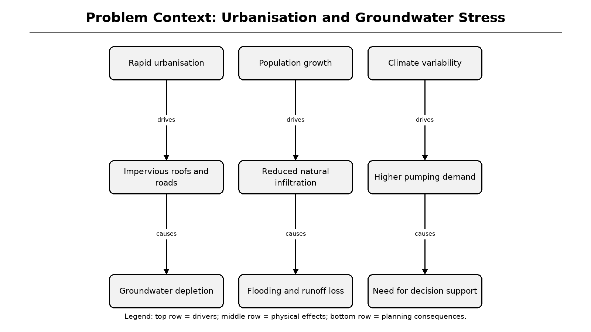
Figure 1.1: Urbanisation pathways leading to recharge stress
Legend: drivers, physical effects and planning consequences are shown from top to bottom.
1.2 Motivation and Stakeholder Need
The motivation for HYDRO RAIN GUARD is the gap between hydrological theory and everyday planning practice. Manuals provide sound equations, but a homeowner rarely knows the correct runoff coefficient, local rainfall distribution, first-flush allowance or recharge-structure footprint. A civil engineer can perform these calculations, yet the process is time-consuming and difficult to repeat for multiple sites [4][5].
Recent work highlights intelligent water systems, spatial analysis and immersive visualisation as promising directions, but most tools focus on monitoring or a single computational stage [6][7][8]. The project therefore targets an integrated assessment: one input form, one auditable calculation engine and several complementary outputs for technical and non-technical users.
Table 1.1: Stakeholder needs addressed by the system
| Stakeholder | Primary need | System response |
|---|---|---|
| Home owner | Understand harvesting potential | Simple wizard and summary cards |
| Civil engineer | Inspect assumptions and methods | Provenance, formulas, AHP audit trail |
| Municipal planner | Compare sites and structures | Stored assessments and PDF reports |
| Researcher | Reproduce and extend results | Separated services and automated tests |
| Field installer | Understand dimensions | Structure dimensions and notes |
1.3 Aim and Objectives
The aim is to design and implement a web-based decision-support system for intelligent rooftop rainwater-harvesting and artificial-recharge assessment. The system combines gridded rainfall data, hydrological computation, multi-criteria structure ranking, three-dimensional visualisation and automated report generation. It is intended for feasibility screening rather than replacement of statutory geotechnical investigation [1].
The specific objectives are to replace manual runoff calculation with validated services; incorporate location-aware rainfall climatology with local override; compute recharge potential and structure dimensions; rank feasible structures using a transparent AHP model; present results through charts, 3D/AR and PDF; persist assessments for later retrieval; and verify the implementation through automated tests and a production build.
Table 1.2: Objectives and measurable outcomes
| Objective | Implemented outcome | Verification |
|---|---|---|
| Automated runoff and cross-check | Rational method plus SCS-CN | Unit and API tests |
| GIS-centric rainfall input | CMAP grid sampling and override | Grid and scaling tests |
| Intelligent recommendation | AHP with consistency ratio | MCDA consistency tests |
| Interactive communication | Charts, 3D/AR and PDF | Build and PDF tests |
| Reproducible assessment storage | SQLite/PostgreSQL persistence | Fresh-database API test |
1.4 Development Approach and System Overview
The project followed an iterative SDLC. The first iteration established the survey paper, research gaps and conceptual framework. The second produced the SRS, architecture and calculation contracts. The third implemented backend services, the assessment wizard and results dashboard. The fourth added the rainfall raster, AHP audit trail, multilingual PDF, 3D/AR view, database lifecycle and regression tests.
The resulting system is a three-tier application. A Next.js frontend collects inputs and displays results; a FastAPI backend validates requests and orchestrates domain services; and a data layer stores assessments plus the bundled precipitation raster and fonts. The same-origin proxy keeps browser code independent of the backend's private address [9][10].
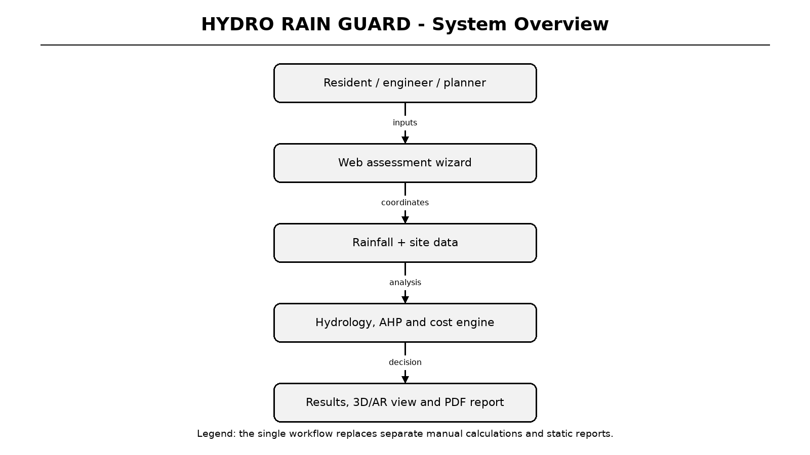
Figure 1.2: End-to-end system overview
Legend: the workflow connects site data to computational services and decision outputs.
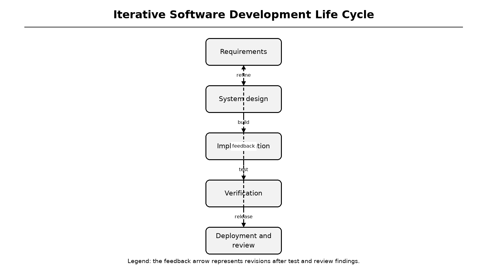
Figure 1.3: Iterative software development life cycle
Legend: feedback from verification returns to requirements and design.
1.5 Scope, Contributions and Report Organization
The scope includes a working software implementation, an accepted survey paper, a detailed requirements and design description, verification evidence and a critical discussion of limitations. The implementation is deterministic: AHP provides decision support, while no trained machine-learning model is used. The rainfall source is a 1991-2020 monthly climatology, optionally supplemented by live temperature and humidity rather than live annual rainfall.
Chapter 2 reviews literature and research gaps. Chapter 3 defines the problem and solution. Chapter 4 specifies requirements. Chapter 5 presents architecture, DFDs and UML diagrams. Chapter 6 describes implementation. Chapter 7 covers testing. Chapter 8 discusses results. Chapters 9 to 11 cover specifications, project plan, conclusion and future work. Appendices contain paper details, evidence and the generated report.
Table 1.3: Chapter map
| Chapter | Focus | Main evidence |
|---|---|---|
| 1-2 | Context and literature | Objectives, survey, gap analysis |
| 3-4 | Problem and requirements | Use cases, SRS, interfaces |
| 5 | System design | Architecture, DFD, ER, UML |
| 6-7 | Implementation and testing | Screenshots, algorithms, tests |
| 8-11 | Results and evaluation | Charts, status, limitations |
| Appendices | Additional evidence | Paper details, PDF, reports |
2 LITERATURE SURVEY
2.1 Systematic Review Methodology
The review considered studies published from 2021 to 2025 and indexed through IEEE Xplore, Springer, ScienceDirect and Google Scholar. Search terms combined rooftop rainwater harvesting, artificial recharge, hydrological modelling, GIS, AI, AR and groundwater recharge. Duplicate records, non-English publications and studies outside the rooftop/artificial-recharge context were excluded. The objective was qualitative synthesis rather than meta-analysis [11].
Each selected study was classified by technology, data source, major contribution and limitation. This made it possible to distinguish hydrological accuracy, spatial planning capability, intelligent recommendation and interactive communication. The review directly informed the functional requirements: rainfall provenance, dual runoff methods, auditable ranking, automated reporting and accessible visualisation.
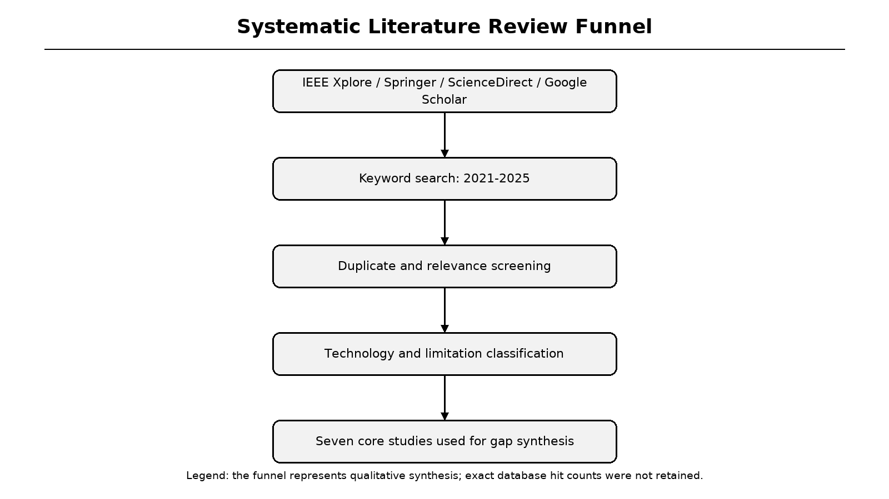
Figure 2.1: Systematic literature review funnel
Legend: stages show identification, screening, classification and synthesis.
2.2 Hydrological Modelling Studies
Manual rooftop-harvesting design remains common in site-specific studies. Mane and Patil demonstrated a village-level design based on rainfall records, roof area and demand, but the approach depends on expert calculation and does not provide software automation [4]. Lu et al. connected rooftop harvesting to hydrological connectivity and flood mitigation, showing that runoff reduction has value beyond household supply [3].
Implementation-oriented work such as the Nashik apartment study estimated annual runoff and borewell recharge, yet it evaluated a single structure and a single site [12]. The literature therefore supports the volumetric method as a baseline but reveals a need for transparent coefficients, first-flush assumptions, monthly distributions and an independent cross-check method.
Table 2.1: Representative hydrological and implementation studies
| Study | Contribution | Limitation |
|---|---|---|
| Mane and Patil (2021) | Site-specific manual RTRWH design | Manual and static |
| Lu et al. (2025) | Runoff connectivity and flood mitigation | No integrated decision support |
| Deshmukh et al. (2022) | Recent technology review | Limited automation |
| IRJMETS (2025) | Borewell recharge case study | Single site and structure |
| CGWB (2007) | Artificial recharge design guidance | Manual interpretation required |
2.3 GIS, Remote Sensing and Rainfall Data
GIS-based studies identify suitable rooftops and recharge zones using spatial layers and remote sensing. Preeti and Rahman showed that geospatial methods improve site selection, while Hari and Kasa assessed rooftop harvesting potential at municipal scale [7][13]. However, these approaches often stop at suitability mapping and do not generate structure dimensions, costs or downloadable engineering reports.
Rainfall data quality is equally important. IMD gridded products provide local observations [14], whereas the NOAA PSL CMAP merged gauge-satellite climatology provides global coverage and a documented monthly distribution [15]. The implementation uses a 2.5-degree CMAP raster with bilinear interpolation and allows a local annual total to override the coarse grid estimate, preserving seasonality while correcting local magnitude.
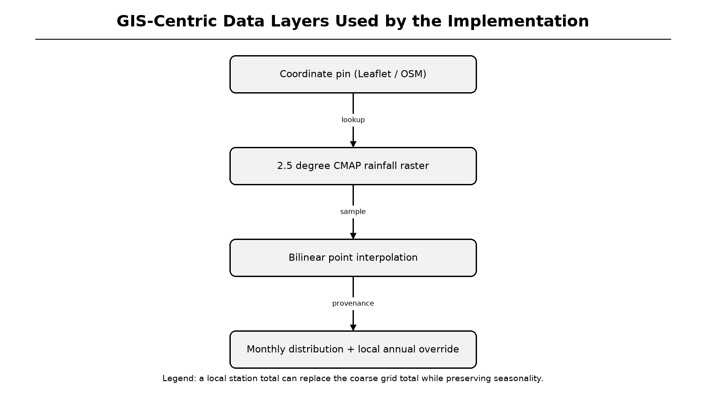
Figure 2.2: GIS-centric rainfall data flow
Legend: coordinate input, raster sampling and local override are chained with provenance.
2.4 AI and Multi-Criteria Decision Support
AI in the water domain is often associated with forecasting, anomaly detection and optimisation [6]. For structure selection, however, a trained model would require labelled site data that are not available in this project. A deterministic multi-criteria method is more defensible because weights and utilities can be inspected by a civil engineer. Saaty's AHP provides a published pairwise-comparison procedure and consistency test [16].
The implementation therefore describes its recommendation layer as intelligent decision support rather than machine learning. Five criteria are normalised to 0-1 utilities, multiplied by AHP weights and summed. Hard physical constraints are applied before scoring, and the pairwise matrix, lambda-max, CI and CR are returned in the API response and PDF report.
Table 2.2: Machine learning and AHP decision-support comparison
| Aspect | Supervised ML | Implemented AHP |
|---|---|---|
| Data requirement | Labelled historical cases | Expert pairwise judgements |
| Transparency | Depends on model | Weights and utilities exposed |
| Validation | Hold-out accuracy | Consistency ratio and unit tests |
| Cold-start behaviour | Poor without data | Works for first site |
| Academic suitability | Requires dataset | Auditable and reproducible |
2.5 Augmented Reality and Visualisation
Subsurface recharge structures are difficult for non-specialists to interpret from two-dimensional drawings. Hansen et al. demonstrated that AR can improve understanding of underground utilities by placing spatial information in the user's physical environment [17]. Similar principles apply to recharge pits, borewells and storage tanks, where depth and scale influence feasibility.
The project adopts react-three-fiber for a desktop three-dimensional scene and @react-three/xr for WebXR placement on supported devices [18][19]. Geometry is derived from the assessment dimensions rather than a static model. A cutaway view and labels expose underground components; immersive AR remains device-dependent and is treated as an enhancement rather than a requirement for the core calculation.
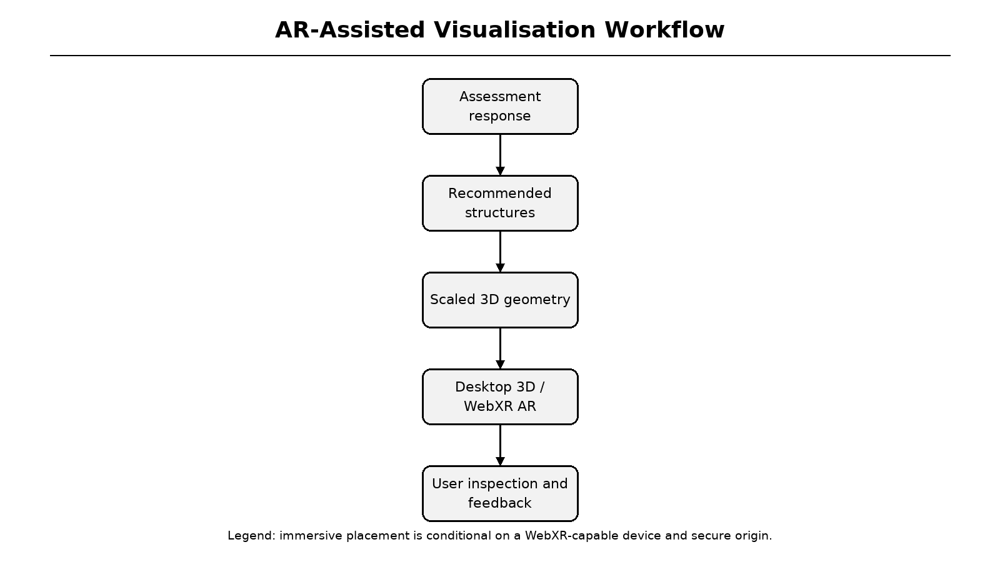
Figure 2.3: AR-assisted visualisation workflow
Legend: assessment data drives geometry, which is rendered in desktop or immersive mode.
2.6 Comparative Analysis of Existing Approaches
The comparative review shows that recent work advances individual components but rarely combines them. GIS studies provide spatial potential; hydrological studies improve runoff estimates; AI work improves prediction and decision support; AR work improves visualisation. Yet a user still needs separate tools to obtain rainfall, runoff, recharge, structure dimensions, cost and a shareable report.
Table 2.1 summarises seven representative studies from 2021 to 2025. The last column identifies the gap that motivated HYDRO RAIN GUARD. This comparison is also reproduced in Appendix A as part of the accepted survey paper details.
Table 2.3: Comparative analysis of recent studies (2021-2025)
| Ref. | Study / source | Technology | Major contribution | Identified limitation |
|---|---|---|---|---|
| [13] | Hari and Kasa (2025) | GIS rooftop mapping | Large-scale urban potential | No recharge structure design |
| [12] | Nashik apartments (2025) | Borewell recharge | Annual runoff and cost | One site, one approach |
| [3] | Lu et al. (2025) | Hydrological connectivity | Flood mitigation assessment | No GIS/AI/AR integration |
| [14] | IMD gridded data (2024) | Rainfall datasets | Localised rainfall | No feasibility workflow |
| [5] | CEEW (2023) | Recharge structures | Groundwater recharge | Region-dependent design |
| [11] | Deshmukh et al. (2022) | GIS / remote sensing | Quality and site review | Limited automation |
| [4] | Mane and Patil (2021) | Manual design | Practical village case | Manual calculations only |
2.7 Research Gaps and Technology Rationale
Six gaps emerge from the review: limited real-time environmental integration; manual runoff computation; weak intelligent recommendation; limited interactive visualisation; lack of a unified assessment framework; and static reporting. The proposed modules map directly to these gaps. The technology stack was chosen to support separation of concerns, type-safe contracts, reproducible calculations and accessible visual output.
FastAPI and Pydantic provide validated asynchronous APIs [9][20]. Next.js, React, Tailwind and Recharts provide a responsive frontend with interactive graphics [10][21][22][23]. ReportLab, HarfBuzz and Noto fonts support multilingual PDF output [24][25][26]. pytest and HTTPX provide deterministic backend verification [27][28].
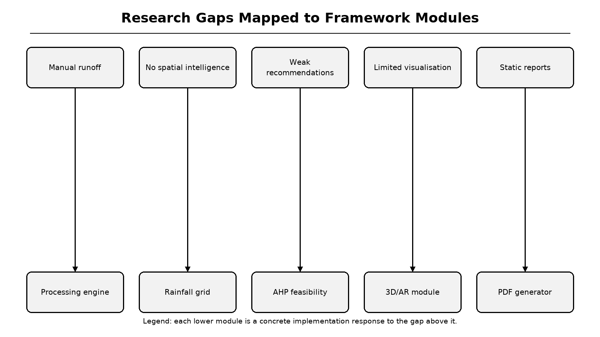
Figure 2.4: Research gaps mapped to implementation modules
Legend: upper boxes are gaps; lower boxes are the corresponding implemented modules.
Table 2.4: Technology rationale
| Layer | Selected technology | Reason |
|---|---|---|
| Backend | FastAPI + Pydantic | Async routes and strict validation |
| Frontend | Next.js 14 + React 18 | App Router and static pages |
| Charts | Recharts | Responsive dashboard graphics |
| Database | SQLAlchemy async | SQLite locally, PostgreSQL in production |
| ReportLab + HarfBuzz | Tables and Indic text shaping | |
| Testing | pytest | Unit, API and rendering tests |
3 PROBLEM STATEMENT
3.1 Detailed Problem Definition
The problem is to transform scattered rooftop, rainfall, soil and groundwater information into a consistent feasibility assessment without requiring the user to perform hydrological calculations manually. Existing practice separates data collection, coefficient selection, runoff estimation, recharge feasibility, structure selection, cost estimation and report preparation. This separation introduces transcription errors and makes assumptions difficult to audit.
Formally, the system must accept a site description, produce annual and monthly water-balance estimates, estimate soil-limited recharge potential, filter physically impossible structures, rank feasible options, calculate indicative economics and communicate the result through charts, 3D/AR and PDF. All outputs must be reproducible from the same request object and must state their data provenance.
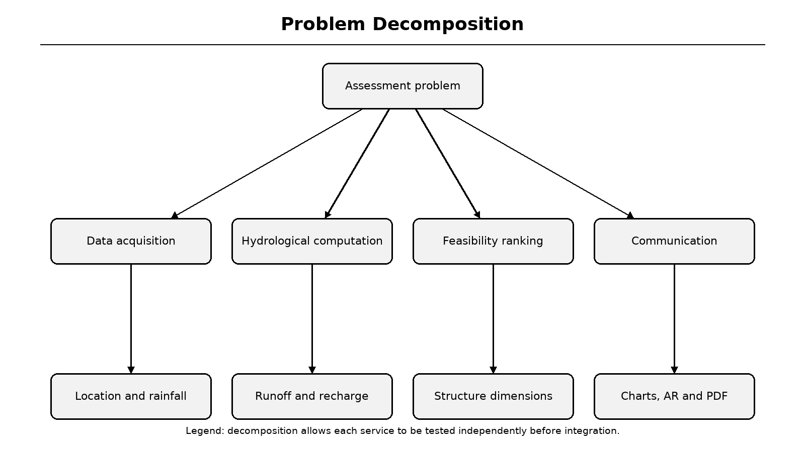
Figure 3.1: Problem decomposition into subsystems
Legend: the central problem is divided into data, computation, ranking and communication.
3.2 Limitations of the Existing Manual System
Manual design relies on rainfall tables, printed guidelines and spreadsheet arithmetic. A change in roof area, soil type or rainfall requires the engineer to revisit several calculations. There is usually no machine-readable provenance, no independent runoff cross-check, no consistency test for structure ranking and no automatic mechanism to produce a updated report for a revised scenario.
Monitoring-oriented smart-water systems improve sensing but do not necessarily support feasibility design. GIS tools produce maps but may not size structures. AR tools explain a design but do not calculate it. The absence of a unified workflow disproportionately affects non-specialist users and small sites that cannot commission a detailed consultancy study.
Table 3.1: Existing-system limitations and required response
| Limitation | Consequence | Required response |
|---|---|---|
| Manual calculations | Transcription and unit errors | Pure hydrology services |
| Static rainfall records | Outdated or distant data | Grid plus local override |
| Rule-of-thumb structure choice | Unclear trade-offs | AHP with audit trail |
| 2D drawings only | Poor spatial understanding | Scaled 3D/AR view |
| Static documents | Slow revision cycle | Generated PDF from stored JSON |
| No persistence | Results lost after refresh | Assessment ID and database |
3.3 Proposed Solution
HYDRO RAIN GUARD proposes an integrated decision-support architecture. User inputs are validated in the browser and again by Pydantic models. Coordinates sample the CMAP raster through bilinear interpolation. Hydrology services compute Rational-method runoff and an SCS-CN cross-check on monthly totals. Recharge is capped by rainfall and soil infiltration. AHP ranks storage and recharge structures after hard-constraint filtering.
The response is stored with a short assessment identifier and returned to the results dashboard. The user can inspect monthly rainfall, runoff, savings, hydrogeology, structure scores and AHP weights. A ReportLab document reproduces the same values with provenance and a multilingual text layer. The same response dimensions drive the 3D/AR scene. This design ensures that all outputs are consistent with one another.
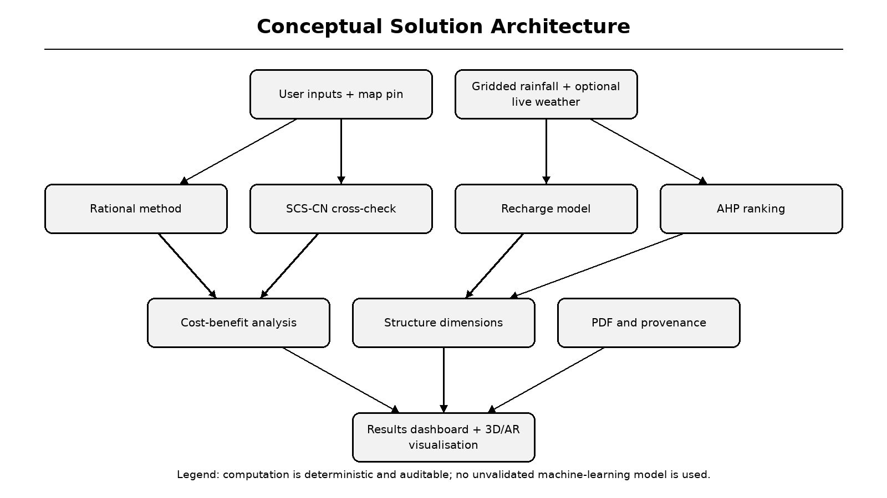
Figure 3.2: Conceptual solution and computational pipeline
Legend: deterministic services receive validated site and rainfall data and produce auditable outputs.
3.4 Feasibility, Assumptions and Constraints
Technical feasibility is demonstrated by the completed repository, passing tests and successful production build. Operational feasibility is supported by a browser-based interface and a public deployment. Economic feasibility is assessed by the system itself, but the resulting payback depends strongly on local water tariff and rainfall; the tool exposes the tariff rather than hiding it.
The assessment is a screening model. It uses long-term monthly climatology, an assumed number of rainy hours, fixed first-flush loss and lookup-table soil infiltration. It does not replace pumping tests, water-quality testing, structural design, legal approval or site surveying. These assumptions are explicitly surfaced in the report and discussed in the limitations chapter.
Table 3.2: Feasibility dimensions and principal assumptions
| Dimension | Status | Key assumption / constraint |
|---|---|---|
| Technical | Implemented and tested | Python 3.10+, Node.js 18+ |
| Data | CMAP climatology bundled | 2.5-degree grid; local override recommended |
| Operational | Web UI and deployment | HTTPS required for immersive WebXR |
| Economic | Cost-benefit module | User-selectable water tariff |
| Hydrological | Screening-level model | Monthly rather than event-scale rainfall |
| Institutional | Academic decision support | Expert validation required before construction |
4 SOFTWARE REQUIREMENTS SPECIFICATION
4.1 Introduction and Project Scope
The SRS defines the externally observable behaviour of HYDRO RAIN GUARD. The system boundary includes the web interface, API, calculation services, persistence and report generation. External services include the bundled CMAP raster, optional OpenWeatherMap current-weather data, OpenStreetMap/Photon/Nominatim geocoding and the browser's WebXR runtime. No external service is required for the core offline calculation path.
The product scope covers assessment creation, weather preview, hydrological analysis, recharge feasibility, AHP ranking, cost-benefit analysis, result retrieval, PDF download, 3D/AR visualisation and multilingual presentation. It excludes IoT sensor management, billing, user accounts, structural certification, municipal approval workflows and water-quality laboratory analysis.
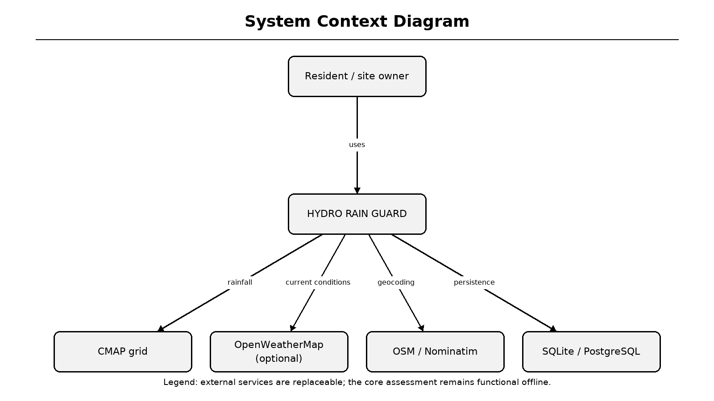
Figure 4.1: System context and external interfaces
Legend: external services provide optional enrichment; the core engine remains local.
4.2 User Classes and Characteristics
The primary user is a resident, student or facility owner who can describe a roof and site but has no hydrological training. The secondary user is a civil or environmental engineer who needs to inspect coefficients, methods and structure dimensions. A tertiary user is a project reviewer or administrator who examines stored assessments and deployment health.
The interface therefore uses plain-language labels, default values, map assistance and progressive validation. At the same time, the results pages expose technical details: rainfall source, grid cell, resolution, climatology period, runoff coefficient, curve number, AHP matrix and formula assumptions. This dual-level presentation supports both accessibility and auditability.
Table 4.1: User classes
| User class | Knowledge level | Main interaction | Required support |
|---|---|---|---|
| Resident | Non-technical | Complete wizard | Defaults, map picker, tips |
| Engineer | Technical | Inspect results and PDF | Provenance, formulas, dimensions |
| Planner | Policy-oriented | Compare scenarios | Stored IDs and charts |
| Reviewer | Academic | Verify implementation | Tests, diagrams, source structure |
| Administrator | Deployment | Maintain database | Environment variables and health API |
4.3 Functional Requirements Overview
Functional requirements are stated as observable system services. Each requirement is implemented by one or more modules and verified by a test or a demonstrable interface behaviour. FR-01 to FR-05 cover input and data acquisition; FR-06 to FR-10 cover computation; FR-11 to FR-15 cover recommendation; FR-16 to FR-21 cover output, persistence and administration.
The requirements avoid prescribing unnecessary implementation details. For example, FR-07 requires an independent runoff cross-check, while the design chapter selects SCS Curve Number as the method. This separation allowed the hydrology service to be replaced or extended without changing the API contract.
Table 4.2: Functional requirements FR-01 to FR-12
| ID | Requirement | Priority |
|---|---|---|
| FR-01 | Accept site, roof, soil and groundwater inputs | High |
| FR-02 | Allow map pin or manual coordinates | High |
| FR-03 | Validate input types and ranges | High |
| FR-04 | Preview monthly and annual rainfall | High |
| FR-05 | Support local annual rainfall override | High |
| FR-06 | Compute Rational-method runoff | High |
| FR-07 | Compute independent SCS-CN cross-check | High |
| FR-08 | Deduct first-flush loss | Medium |
| FR-09 | Compute recharge potential and score | High |
| FR-10 | Rank feasible recharge/storage structures | High |
| FR-11 | Compute costs, savings, ROI and payback | Medium |
| FR-12 | Generate downloadable multi-page PDF | High |
4.4 Data Acquisition Requirements
The assessment wizard must collect a project name, location, coordinates, occupant count, roof type, roof area, open-space area, soil type, groundwater depth, optional water tariff, optional annual rainfall total and runoff-method selection. Zod performs client-side validation, and Pydantic repeats validation on the server [29][20].
Weather preview is a read-only operation. It must return the annual rainfall, twelve monthly values, source, method, grid cell, resolution, climatology period and flags indicating whether the total came from the grid or a local override. Optional OpenWeatherMap data must be limited to current temperature, humidity and recent rain; annual rainfall must remain reproducible from the climatology [30].
Table 4.3: Input fields and validation
| Field | Type / allowed values | Validation |
|---|---|---|
| latitude / longitude | float | -90..90 / -180..180 |
| roof_area | float (m2) | >= 5 and <= 10,000 |
| open_space_area | float (m2) | >= 0 |
| roof_type | RCC, METAL, TILE, GREEN, ASPHALT | Enumerated |
| soil_type | SANDY, LOAMY, CLAY, GRAVELLY, SILTY | Enumerated |
| groundwater_depth | float (m) | >= 1 and <= 200 |
| annual_rainfall_override | float (mm/year) | Optional, > 0 |
| water_tariff_per_kl | float (INR/KL) | Optional, > 0 |
4.5 Hydrology and Recommendation Requirements
The hydrology subsystem must compute annual and monthly runoff from rainfall, roof area and a roof-material coefficient. It must also compute SCS-CN runoff for each month using a curve-number lookup and the TR-55 retention equation [31]. A fixed first-flush allowance must be deducted from the primary annual volume and allocated across months for savings calculations.
The recommendation subsystem must apply minimum harvestable-volume and open-space constraints before scoring. Each candidate structure must receive a 0-100 suitability score, dimensions, installation notes and a per-criterion breakdown. AHP weights must be derived from a reciprocal matrix and rejected if the consistency ratio exceeds 0.10 [16].
Table 4.4: Core computation requirements
| Service | Input | Output | Constraint |
|---|---|---|---|
| calculate_runoff | Request + WeatherData | RunoffResult | Both methods reported |
| calculate_recharge | Request + WeatherData | RechargeResult | Cap at rainfall and 70% efficiency |
| get_recommendations | Runoff + Recharge | Ranked structures | Hard constraints first |
| get_mcda_info | Pairwise matrix | Weights + CR | CR <= 0.10 |
| calculate_cost_benefit | Top structures | CostBenefitAnalysis | Monthly savings reconcile |
4.6 Visualisation and Reporting Requirements
The results dashboard must present summary cards for runoff, harvestable volume, recharge potential, feasibility score and economic indicators. It must provide separate tabs for overview, monthly analysis, structures, cost-benefit and hydrogeology. Charts must use the same response object as the PDF so that figures cannot disagree.
The PDF must include project metadata, executive summary, rainfall provenance, input parameters, monthly table, hydrological formulas, structure recommendations, AHP audit trail, cost-benefit, hydrogeology, installation notes and limitations. Devanagari names and locations must be shaped correctly. The 3D/AR page must derive geometry from assessment dimensions and degrade gracefully when immersive AR is unavailable.
Table 4.5: Output requirements
| Output | Content | Implementation |
|---|---|---|
| Results dashboard | Cards, tabs and charts | Next.js + Recharts |
| Multi-page assessment report | ReportLab + HarfBuzz | |
| 3D scene | Tank, pit, well, roof and ground | react-three-fiber |
| AR mode | Floor placement on supported devices | @react-three/xr WebXR |
| Stored result | Full response JSON | SQLAlchemy entity |
| Localisation | English, Hindi, Marathi | i18n dictionaries |
4.7 Use Case Documentation
The principal use case is Create Assessment. The actor opens the wizard, selects a site, previews rainfall, enters roof and site conditions and submits the form. The system validates the request, samples climatology, computes all services, stores the response and navigates to the results page. Alternate flows include invalid coordinates, weather preview failure and database unavailability.
Secondary use cases are Retrieve Assessment, Download Report, Inspect 3D/AR Model, Change Language and Initialise Database. The complete use case list is provided in the table below; detailed preconditions and postconditions are summarised in Appendix E. The use-case diagram uses simplified actor boxes because the diagram is rendered in monochrome for the report.
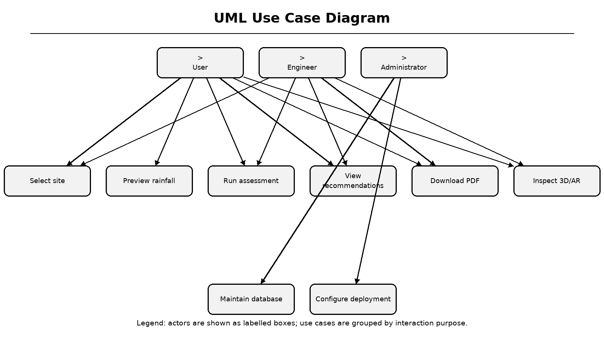
Figure 4.2: UML use case diagram
Legend: actors are grouped at the top; use cases are grouped by purpose below.
Table 4.6: Use case catalogue
| ID | Use case | Actor | Postcondition |
|---|---|---|---|
| UC-01 | Create assessment | User | Assessment stored and displayed |
| UC-02 | Preview rainfall | User | Monthly rainfall shown |
| UC-03 | Retrieve assessment | User | Stored response loaded by ID |
| UC-04 | Download PDF | User | PDF stream returned |
| UC-05 | Inspect 3D/AR | User | Scaled model displayed |
| UC-06 | Change language | User | UI strings updated |
| UC-07 | Initialise database | Admin | Tables created |
4.8 External Interface Requirements
The user interface is a responsive web application with navigation, a three-step wizard, results tabs, about page, language switcher and 3D/AR page. The hardware interface includes a keyboard, pointer or touch screen; a WebXR-capable Android device is optional. The software interface consists of HTTP/JSON APIs and browser APIs for localStorage, geolocation and WebXR.
Communication uses same-origin /api requests from the browser. Next.js rewrites these to the configured backend target. CORS is configured as an additional safeguard for direct API use. The database URL, admin token, CORS origins, weather key, environment and API proxy target are supplied through environment variables rather than hard-coded secrets.
Table 4.7: External interfaces
| Interface | Protocol / technology | Purpose |
|---|---|---|
| User interface | HTML, CSS, JavaScript | Assessment and visualisation |
| Frontend API client | Axios over HTTP/JSON | Assessment and weather calls |
| Backend API | FastAPI REST + OpenAPI | Validated computation endpoints |
| Map services | Leaflet, Photon, Nominatim | Site selection and reverse geocoding |
| Weather | OpenWeatherMap REST | Optional current conditions |
| Database | SQLAlchemy async driver | SQLite or PostgreSQL persistence |
| AR | WebXR immersive-ar | Optional model placement |
4.9 Nonfunctional and System Requirements
Performance requirements state that a typical assessment should complete within a few seconds because the rainfall raster is local and live weather has a ten-second timeout. Reliability requires graceful degradation when optional APIs fail. Security requires production maintenance endpoints to be protected by an admin token and personally identifying fields to be redacted in unauthorised history responses.
Quality attributes include maintainability through service separation, portability through environment variables, usability through multilingual labels and testability through pure functions. Minimum development hardware is a 64-bit dual-core machine with 8 GB RAM; recommended deployment uses a Python 3.10+ backend, Node.js 18+ frontend, PostgreSQL and HTTPS. The iterative SDLC model supports incremental verification.

Figure 4.3: Iterative SDLC model applied to the project
Legend: each iteration ends with verification and feeds the next refinement.
Table 4.8: Nonfunctional requirements
| ID | Attribute | Requirement |
|---|---|---|
| NFR-01 | Performance | Typical assessment < 5 s with local raster |
| NFR-02 | Availability | Rainfall grid works without API key |
| NFR-03 | Security | Admin token for production maintenance |
| NFR-04 | Privacy | Redact names/locations in unauthorised history |
| NFR-05 | Maintainability | Services separated by domain |
| NFR-06 | Portability | Environment-based configuration |
| NFR-07 | Usability | Three-step wizard and three languages |
| NFR-08 | Testability | Unit, API and PDF regression tests |
5 SYSTEM DESIGN
5.1 System Architecture
The architecture is organised into presentation, API, service and data tiers. The presentation tier contains Next.js routes and React components. The API tier exposes FastAPI endpoints and Pydantic schemas. The service tier contains weather, rainfall-grid, hydrology, feasibility, MCDA, cost-benefit, text-shaping and PDF-report modules. The data tier contains the assessment table, precipitation raster and bundled fonts.
This separation makes the domain logic independent of HTTP and UI concerns. Services receive and return Pydantic models, so they can be unit-tested without a browser. The API layer is responsible for validation, orchestration, persistence and error translation. The frontend is responsible for state, charts and presentation; it does not compute hydrological results.

Figure 5.1: Three-tier system architecture
Legend: arrows show request flow from browser to API, services and data.
5.2 Frontend Design
The frontend uses the Next.js App Router with six static routes: home, about, assess, results, not-found and AR. The assessment page is a client component with a three-step wizard. React Hook Form and Zod manage state and validation, while Framer Motion supplies step transitions [32][33]. The map picker is dynamically imported with server-side rendering disabled because Leaflet requires the browser window [34].
After submission, the full AssessmentResponse is stored in localStorage under hydro_result and the assessment ID is placed in the URL. The results page reads localStorage first and falls back to GET /api/assessment/{id} for shared links. Recharts renders monthly rainfall, runoff and savings charts from the same response object.

Figure 5.2: Frontend page and state flow
Legend: results state is shared with the 3D/AR page and PDF download action.
5.3 Backend API Design
FastAPI exposes health, weather preview, assessment creation, assessment retrieval, PDF download, assessment history and manual database initialisation endpoints. Interactive OpenAPI documentation is available at /docs. The main assessment endpoint follows a fixed sequence: weather, runoff, recharge, recommendations, cost-benefit, hydrogeology, response creation and persistence.
Startup uses a lifespan handler to create tables, eliminating the fresh-clone failure where the first assessment returned HTTP 500. A guarded init_db function prevents repeated concurrent creation. Production maintenance endpoints require an admin token; development keeps them open for local convenience. CORS origins are configurable through environment variables.
Table 5.1: API endpoints
| Method | Endpoint | Purpose |
|---|---|---|
| GET | /api/health | Service health and timestamp |
| GET | /api/weather | Rainfall preview for coordinates |
| POST | /api/assess | Run full assessment and persist |
| GET | /api/assessment/{id} | Retrieve stored response |
| GET | /api/report/{id} | Generate PDF report |
| GET | /api/assessments | Recent assessments (redacted if unauthorised) |
| POST | /api/init-db | Manual table creation |
| GET | /docs | Swagger UI documentation |
5.4 Data Contracts and Validation
Pydantic models define AssessmentRequest, WeatherData, RunoffResult, RechargeResult, StructureRecommendation, MCDAInfo, CostBenefitAnalysis, HydroGeoInfo and AssessmentResponse. TypeScript interfaces in frontend/lib/types.ts mirror these contracts. This alignment prevents silent field drift between Python and browser code.
The request schema restricts roof and soil types to enumerations and allows optional override fields. The response schema always includes both runoff methods, provenance fields, AHP audit information and nullable payback. A null payback explicitly means that the system does not repay its capital cost at the selected tariff; it is not displayed as a numeric sentinel.
Table 5.2: Principal data contracts
| Model | Important fields | Design note |
|---|---|---|
| AssessmentRequest | roof_area, soil_type, latitude, longitude | Validated by Pydantic/Zod |
| WeatherData | monthly_rainfall, source, method | Provenance is mandatory |
| RunoffResult | rational + SCS-CN values | Cross-check always visible |
| RechargeResult | infiltration_rate, score | Soil and depth based |
| StructureRecommendation | score, dimensions, criteria | Auditable ranking |
| CostBenefitAnalysis | cost, savings, payback, ROI | Payback is nullable |
| AssessmentRequest -> get_weather_data(lat, lon, override?) WeatherData + Request -> calculate_runoff() / calculate_recharge() Runoff + Recharge -> get_recommendations() -> list[Structure] Top structures -> calculate_cost_benefit() -> AssessmentResponse AssessmentResponse -> SQLite/PostgreSQL -> PDF / Results / AR |
5.5 Data Flow Diagram - Level 0
The Level-0 DFD shows the user as the source of site inputs and the recipient of assessment results. The HYDRO RAIN GUARD process is the central transformation. External data and storage include the precipitation raster, optional weather service, map services and the assessment database.
This high-level view emphasises that the system is not merely a form. It transforms validated site and rainfall data into hydrological, economic and visual outputs. Every output can be traced back to the same assessment identifier, which is essential for reproducibility.

Figure 5.3: Data Flow Diagram - Level 0
Legend: input arrows enter the central process; output arrows return results and reports.
5.6 Data Flow Diagram - Level 1
Level 1 decomposes the central process into five stages: validate input, acquire rainfall, compute hydrology, rank structures and generate outputs. The rainfall raster and assessment database act as data stores. Weather preview uses stages 1 and 2, whereas a full assessment uses all five stages.
The decomposition matches the service modules in the backend. A failure in optional live weather does not stop the rainfall stage because the climatology grid is local. A failure in database persistence is reported as an API error, while calculations can still be unit-tested independently.

Figure 5.4: Data Flow Diagram - Level 1
Legend: numbered processes correspond to validation, acquisition, computation, ranking and output.
5.7 Data Flow Diagram - Level 2
Level 2 focuses on hydrological computation. Monthly rainfall feeds both the Rational method and SCS-CN cross-check. The first-flush deduction is applied to the selected primary method. Harvestable volume then feeds recharge sizing, structure ranking and monthly savings. Peak runoff rate is derived from the wettest month.
The two runoff methods are not merged into a hidden average. The chosen method drives economics, while the other is displayed as a percentage difference. This design makes model uncertainty visible to the user and supports future calibration against observed roof runoff data.

Figure 5.5: Data Flow Diagram - Level 2: hydrology
Legend: parallel computation paths provide an auditable cross-check.
5.8 Entity Relationship and Database Design
The database contains a single Assessment entity. Its primary key is an eight-character uppercase identifier derived from UUID4. Indexed summary columns store name, location, coordinates, roof area, soil type, groundwater depth, runoff, recharge, recommended structure, cost and payback. A full_response_json column stores the complete API response.
SQLite is used for local development and tests; PostgreSQL through asyncpg is supported for production. The dual-driver configuration rewrites postgres:// URLs, strips unsupported SSL query parameters and passes SSL through connect_args. This design reflects a realistic deployment path while keeping local setup simple [35].

Figure 5.6: Entity relationship diagram
Legend: one Assessment aggregates the request, weather, runoff, recharge, structures, economics and MCDA data.
Table 5.3: Assessment table summary
| Column group | Representative columns | Purpose |
|---|---|---|
| Identity | id, timestamp | Shareable result and ordering |
| Site | name, location, latitude, longitude | Project identification |
| Inputs | roof_type, roof_area, soil_type, depth | Reproducibility |
| Outputs | annual_runoff_volume, recharge, cost | Quick history queries |
| Complete state | full_response_json | PDF regeneration and result links |
5.9 UML Use Case and Class Views
The use case view identifies residents, engineers and administrators as actors and groups their interactions into assessment, visualisation, reporting and maintenance services. The class view is simplified because the implementation uses Pydantic data-transfer objects rather than deep inheritance hierarchies. Composition is preferred: AssessmentResponse contains WeatherData, RunoffResult, RechargeResult, a list of structures, CostBenefitAnalysis and MCDAInfo.
This structural choice keeps domain objects immutable from the API consumer's perspective. Services are stateless functions, and the ORM entity is used only for persistence. As a result, changes to visualisation do not require database schema changes, and new calculation services can be added without altering the frontend contract.

Figure 5.7: UML use case diagram
Legend: use cases are grouped by user goal and system responsibility.

Figure 5.8: Simplified UML class diagram
Legend: Pydantic response models are composed inside AssessmentResponse.
5.10 Sequence Diagram
The sequence diagram traces a successful assessment. The user fills the wizard, the UI posts to the same-origin /api path, the Next.js rewrite forwards the request to FastAPI, and FastAPI invokes domain services. After computation, the response is persisted and returned through the proxy to the browser, which navigates to the results page.
The diagram also clarifies why the frontend never calls a private localhost backend in deployment. Browser requests remain same-origin, while server-side rewrites can target a separately hosted API. This avoids mixed-content problems and reduces CORS complexity.

Figure 5.9: UML sequence diagram for assessment creation
Legend: vertical lifelines represent participants; horizontal arrows represent messages.
5.11 Component Diagram
The component diagram maps frontend pages and the API client to FastAPI routes and domain services. Static assets such as the precipitation raster and fonts are read by the rainfall-grid and PDF components. The database component stores the full response and powers result retrieval and report regeneration.
Loose coupling is achieved through narrow function signatures. For example, calculate_runoff depends only on AssessmentRequest and WeatherData, not on HTTP or SQLAlchemy. This makes it possible to test the hydrology module with synthetic weather objects and to replace the rainfall source later without rewriting the calculation engine.

Figure 5.10: UML component diagram
Legend: components communicate through typed interfaces rather than shared global state.
5.12 Deployment and State Diagrams
The deployment diagram shows a browser or mobile client, a Vercel-hosted Next.js frontend, a FastAPI service, a PostgreSQL or SQLite database and local raster/font assets. The project frontend is deployed at the URL supplied by the team, while the backend can be hosted separately and reached through the configured rewrite target.
The state machine describes an assessment from idle through input, weather preview, computation, results and export. Error transitions return to input without losing data. A new assessment resets the state machine. These views connect the logical design to the operational status described later in the report.

Figure 5.11: UML deployment diagram
Legend: production persistence should use PostgreSQL rather than ephemeral serverless SQLite.

Figure 5.12: UML state machine diagram
Legend: the export state includes PDF download and 3D/AR inspection.
6 PROJECT IMPLEMENTATION
6.1 Implementation Overview
The implementation is divided into frontend routes, reusable components, typed API helpers, backend routes, Pydantic/SQLAlchemy models, pure calculation services, static data and tests. The backend contains nine service modules and four test modules; the frontend contains six App Router routes, five principal components and a typed i18n subsystem.
The module map shows how source code is organised. The README documents quick start, rainfall provenance, hydrological methods, AHP weights, endpoints, environment variables and known deployment constraints. A reproducibility script rebuilds the precipitation raster from a source SQLite database. The implementation is committed to the project repository for review.

Figure 6.1: Implementation module map
Legend: frontend, backend, services, tests and static data are separated.
Table 6.1: Implemented modules
| Area | Modules | Status |
|---|---|---|
| Frontend pages | home, about, assess, results, ar | Completed |
| Frontend components | navbar, footer, map, AR viewer, language switcher | Completed |
| Backend API | health, weather, assess, report, history | Completed |
| Services | rainfall, hydrology, MCDA, cost, PDF | Completed |
| Data | CMAP raster, provenance JSON, Noto fonts | Completed |
| Tests | 38 backend tests | Passing |
6.2 Landing and About Pages
The landing page introduces the problem, describes six capabilities and presents the five-step workflow. It uses responsive cards, iconography and motion effects while keeping all navigation accessible from the top bar. The About page lists the institution, research team, paper identification and reference summary.
The interface is intentionally lightweight. No 3D engine is loaded on the landing page; the AR viewer is dynamically imported only when the user opens the 3D route. This lazy-loading decision reduces initial JavaScript cost and prevents the rest of the application from depending on WebGL availability.

Figure 6.2: Implemented landing page
Legend: hero area, capability summary and primary call-to-action are shown.

Figure 6.3: Implemented About page
Legend: institution, paper identity and research team are displayed.
6.3 Assessment Wizard - Basic Information
Step one captures the project name, occupant count, site coordinates and location name. A Leaflet map allows the user to place a pin, search for a place, use device location or switch to manual coordinate entry. Photon is attempted first for geocoding and Nominatim is used as a fallback [36].
The coordinate state is lifted out of the form watch subscription. Shared InputField and SelectField components are declared at module scope, preventing React from unmounting and remounting the inputs on each keystroke. getValues reads coordinates only when the weather preview button is pressed, so typing high-precision decimal values remains stable.

Figure 6.4: Assessment wizard - basic information and map pin
Legend: map controls, coordinate summary and manual-entry toggle are visible.
6.4 Assessment Wizard - Roof and Rainfall
Step two selects roof type and area, fetches rainfall climatology and displays location, annual rainfall, temperature, humidity, dataset, climatology period and grid cell. A warning appears when the annual total comes directly from the coarse grid. The local override field replaces only the annual total while preserving the monthly distribution.
In the verified Pune example, the grid's 2.5-degree cell would overstate local rainfall; an IMD-style 700 mm override is applied. The screenshot shows 700 mm annual rainfall, source NOAA PSL CMAP, climatology 1991-2020 and grid cell 18.75 degrees, 73.75 degrees at 2.5-degree resolution.

Figure 6.5: Assessment wizard - roof details and rainfall preview
Legend: rainfall provenance and local override controls are shown below the weather summary.
6.5 Assessment Wizard - Site Conditions
Step three captures open-space area, soil type, groundwater depth and the water tariff used for economic analysis. A contextual tip explains typical groundwater depths. The tariff is user-adjustable because avoided water cost is the most sensitive parameter in payback calculation; municipal and tanker rates can differ by an order of magnitude.
The Run Assessment button calls handleSubmit only on the final step. The wizard intentionally avoids a wrapping form element and marks all navigation buttons as type=button, preventing accidental submission while pressing Next. On success, the response is saved to localStorage and the browser navigates to /results?id=<assessment_id>.

Figure 6.6: Assessment wizard - site conditions and final submission
Legend: soil, groundwater depth and tariff are entered before the final assessment.
6.6 Rainfall Grid and Weather Service
The rainfall-grid service reads a compact binary raster containing twelve monthly means for a global 2.5-degree grid. It performs bilinear interpolation between four surrounding cell centres, handles longitude wrap-around at the dateline and rejects no-data cells. A companion JSON file stores dataset provenance and period metadata.
The weather service calls the grid sampler, optionally rescales monthly values to a user-supplied annual total and then attempts an optional OpenWeatherMap request. If the key is missing or the request fails, default temperature and humidity are used but rainfall remains available. This graceful degradation makes the core assessment independent of network access [15][30].

Figure 6.7: Bilinear rainfall grid sampling
Legend: four surrounding grid cells contribute to the interpolated monthly value.
Table 6.2: Rainfall provenance fields
| Field | Example value | Purpose |
|---|---|---|
| Source | NOAA PSL CMAP | Dataset identity |
| Period | 1991/01/01 - 2020/12/31 | Climatology baseline |
| Resolution | 2.5 degrees | Spatial uncertainty |
| Grid cell | 18.75 deg, 73.75 deg | Interpolation reference |
| Method | Grid monthly shape + local annual total | Override provenance |
| Grid estimate flag | false | Signals a local override was used |
6.7 Hydrology Service Implementation
The hydrology service maps roof materials to runoff coefficients and curve numbers. RCC uses C=0.90 and CN=98; metal uses 0.85 and 97; tile uses 0.75 and 95; green roof uses 0.30 and 75; asphalt uses 0.80 and 96. Monthly Rational runoff is computed as C times rainfall depth times roof area, with unit conversion from millimetres to litres.
SCS-CN is computed on each monthly rainfall total using S=25400/CN-254, Ia=0.2S and Q=(P-Ia)^2/(P-Ia+S) when P exceeds Ia [31]. A fixed first-flush allowance of 2 mm over 100 assumed events is deducted. In the Pune sample, Rational runoff is 63.0 KL and the SCS-CN cross-check is 65.3 KL, a difference of 3.7 percent.
Table 6.3: Roof coefficients and curve numbers
| Roof type | Runoff coefficient C | Curve number CN | Interpretation |
|---|---|---|---|
| RCC | 0.90 | 98 | Highly impervious |
| Metal | 0.85 | 97 | High runoff |
| Tile | 0.75 | 95 | Moderate-high runoff |
| Asphalt | 0.80 | 96 | Impervious |
| Green | 0.30 | 75 | Retention and evapotranspiration |
| for each month m: rational_L = C * R_m(mm) * A(m2) S = 25400 / CN - 254 Ia = 0.2 * S scs_L = (R_m - Ia)^2 / (R_m - Ia + S) * A if R_m > Ia else 0 harvestable = max(0, primary_annual - first_flush_loss) |
6.8 Recharge and Feasibility Service
Recharge potential uses soil-specific infiltration rates: gravelly 30 mm/hr, sandy 25, loamy 12.5, silty 6.5 and clay 2.5. The service assumes 120 rainy days at eight hours per day, multiplies infiltration by open space and duration, and caps the result at 70 percent of rainfall over the open area. A rule-based feasibility score combines depth, soil, space and rainfall.
Structure definitions encode minimum harvestable volume, minimum open space, rainfall band, infiltration band and groundwater-depth band. A hard space filter removes physically impossible options before AHP scoring. For the Pune sample, recharge potential is 24.5 KL/year at 67.1 L/day and the feasibility score is 55/100.
Table 6.4: Recharge structure catalogue
| Structure | Minimum harvestable | Minimum space | Suitable condition |
|---|---|---|---|
| Rooftop Storage Tank | 0 L | 0 m2 | All buildings |
| Recharge Pit | 20 KL | 9 m2 | Permeable soil, moderate depth |
| Recharge Well | 60 KL | 4 m2 | Deep aquifer, limited surface space |
| Percolation Tank | 200 KL | 100 m2 | Large open plots |
| Soak Pit / French Drain | 10 KL | 6 m2 | Small roofs and moderate soil |
6.9 AHP Recommendation Engine
The MCDA service builds a five-by-five reciprocal pairwise matrix. Harvestable yield is preferred over annual rainfall, rainfall over soil infiltration, infiltration over open space and open space over groundwater depth. Geometric-mean weights are computed and checked with lambda-max, CI, RI and CR. The implementation reports CR=0.0152, below Saaty's 0.10 threshold [16].
Each criterion is converted to a 0-1 utility using ramp or trapezoidal functions. The weighted sum is multiplied by 100 to produce a suitability score. For the Pune sample, rooftop storage tank scores 93.0, soak pit 72.8, recharge pit 69.0 and recharge well 51.8. The percolation tank is filtered out because the available open space is too small.

Figure 6.8: AHP criteria hierarchy
Legend: goal, criteria and candidate structures form the decision hierarchy.

Figure 6.9: Derived AHP criterion weights
Legend: weights are percentages and are checked for internal consistency.
6.10 Cost-Benefit Implementation
The cost-benefit service prices the top two recommended structures, adds plumbing estimated from roof perimeter and applies a user-selectable avoided-water tariff. Storage, recharge and plumbing costs are kept separate. Recharge benefit is valued conservatively at half the water tariff, annual maintenance is two percent of capital cost and ROI uses a ten-year horizon.
Monthly savings are derived from the harvestable monthly series after first-flush allocation; annual savings are the sum of those monthly values, so charts and summary cards cannot disagree. For the Pune sample, estimated cost is Rs. 53,000, annual savings Rs. 1,505, net annual benefit Rs. 874, payback 60.6 years and ten-year ROI -83.5 percent. The interface states that the system is not economically viable at this tariff within ten years.

Figure 6.10: Estimated capital cost breakdown
Legend: bars show storage, recharge and plumbing components for the Pune sample.
Table 6.5: Economic parameters
| Parameter | Value | Meaning |
|---|---|---|
| Default tariff | Rs. 35/KL | Blended avoided water cost |
| Storage tank | Rs. 25,000 | Base structure cost |
| Soak pit | Rs. 8,000 | Base structure cost |
| Plumbing | Rs. 500/m | Roof perimeter estimate |
| Maintenance | 2%/year | Operating allowance |
| ROI horizon | 10 years | Decision horizon |
6.11 Reporting, Languages and 3D/AR
PDF generation uses ReportLab tables and flowables, with every input value, monthly series, recommendation, AHP audit field and economic assumption included [24]. Because ReportLab cannot shape Devanagari correctly, the text-shaping service uses HarfBuzz and fontTools to produce glyph outlines for Hindi and Marathi, while Latin text remains searchable [25][26].
The i18n layer provides English, Hindi and Marathi dictionaries with English fallback. The AR page lazy-loads a react-three-fiber viewer, builds geometry from roof area, tank volume, pit depth and well depth, and offers cutaway and label toggles [18]. WebXR AR placement is available only on supported secure-origin devices [19].

Figure 6.11: Automated PDF report pipeline
Legend: HarfBuzz shaping is applied before Devanagari text is drawn as vector outlines.

Figure 6.12: Implemented 3D/AR structure selection panel
Legend: scores and dimensions come from the stored assessment response.
7 SOFTWARE TESTING
7.1 Testing Strategy and Experimental Setup
Testing was organised into four levels. Unit tests exercise the rainfall grid, interpolation, scaling, Rational and SCS-CN runoff, recharge scoring, AHP consistency, cost-benefit reconciliation and Devanagari shaping. API integration tests use FastAPI TestClient with a fresh temporary SQLite database and exercise the full startup lifecycle. PDF tests inspect generated bytes, page count and font embedding. Frontend verification uses a strict TypeScript production build.
The test environment used Python 3.11 with pinned requirements and Node.js 22 with the committed package lockfile. Backend tests were run from the Project directory using pytest with pythonpath configured to the backend package. The frontend build compiled six routes and checked lint and type validity. Test selection focused on calculations, numerical invariants, error cases and regressions that had previously broken the primary user journey.
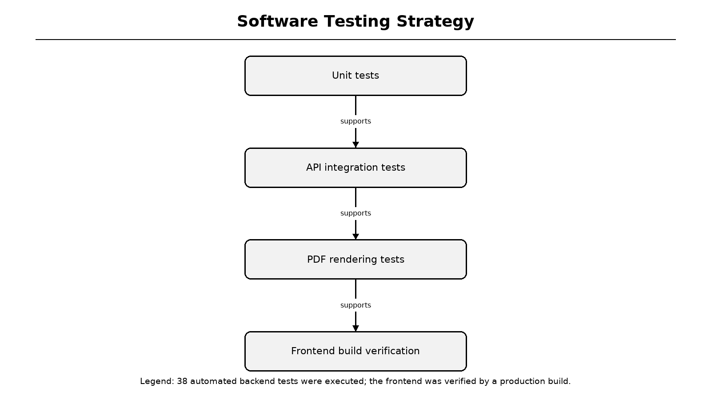
Figure 7.1: Software testing strategy
Legend: unit, API, PDF and build verification progressively cover the implementation.
7.2 Unit Test Cases and Results
Rainfall-grid tests verify that the bundled raster is real, global and non-India-specific; New York must not receive a monsoon profile. Interpolation tests check exact cell centres, between-cell sampling, dateline and polar coordinates. Scaling tests verify that a 700 mm override preserves the July peak and sums to the requested annual total [15].
Hydrology tests confirm that a 100 m2 RCC roof with 700 mm rainfall produces approximately 63 KL gross runoff, that green roofs produce less runoff than RCC, and that monthly runoff sums to the annual value. SCS-CN tests cover zero runoff below initial abstraction, monotonicity, roof-material differences and selection of either method as the primary basis.
Table 7.1: Representative unit test cases
| Test ID | Test | Expected result | Status |
|---|---|---|---|
| UT-01 | Grid is installed and real | 12 months, 30 valid years | Pass |
| UT-02 | New York rainfall profile | No monsoon peak | Pass |
| UT-03 | Bilinear interpolation | Finite, cell-specific value | Pass |
| UT-04 | Scale to annual 700 mm | Sum 700, July peak retained | Pass |
| UT-05 | Pune RCC runoff | 55-70 KL, C=0.90 | Pass |
| UT-06 | Green roof lower runoff | Less than RCC | Pass |
| UT-07 | SCS-CN below Ia | Zero runoff | Pass |
| UT-08 | Monthly/annual consistency | Difference < 1 L | Pass |
7.3 API Integration Test Cases
API tests verify health, fresh-database assessment creation, retrieval by ID, PDF download, unknown-ID handling, monthly/annual savings reconciliation, nullable payback, high-rainfall economic viability and production admin-token protection. A dedicated fixture purges cached backend modules between tests so each temporary database receives a fresh SQLAlchemy engine.
The fresh-database test is a regression guard for the earlier defect where /api/assess returned HTTP 500 because tables were not created. The current lifespan handler calls init_db at startup, and the test enters TestClient as a context manager so the startup event actually runs. This test now passes as part of the 38-test suite.
Table 7.2: API integration test cases
| Test ID | Endpoint / scenario | Expected result | Status |
|---|---|---|---|
| IT-01 | GET /api/health | 200 and healthy | Pass |
| IT-02 | POST /api/assess on fresh DB | 200 with assessment ID | Pass |
| IT-03 | GET /api/assessment/{id} | Same stored response | Pass |
| IT-04 | GET /api/report/{id} | %PDF stream | Pass |
| IT-05 | Unknown assessment ID | 404 | Pass |
| IT-06 | Monthly savings reconciliation | Difference < Rs. 1 | Pass |
| IT-07 | High-rainfall site | Finite payback < 20 years | Pass |
| IT-08 | Production init-db guard | 403 without token, 200 with token | Pass |
7.4 PDF and Multilingual Rendering Tests
Text-shaping tests verify that Devanagari conjuncts such as ksha, gya, tra and shra collapse into single glyphs, that the i-matra is reordered before its consonant, that reph is emitted with zero advance and that half forms are substituted. Font-fallback tests confirm that unsupported symbols are replaced rather than rendered as missing glyphs.
Report tests generate a valid PDF with a Devanagari owner name, assert the PDF header and EOF marker, verify that only the Latin Noto face is embedded, confirm that Devanagari adds vector outline data, check multiple pages and compare size stability for identical inputs. A module-scoped client fixture now uses a temporary database and the normal application lifespan, resolving the earlier setup error in these tests.
Table 7.3: PDF and shaping test cases
| Test ID | Assertion | Result |
|---|---|---|
| PT-01 | ksha/gya/tra/shra conjuncts | Single glyphs |
| PT-02 | i-matra reordering | Vowel sign precedes consonant |
| PT-03 | Reph zero advance | Position advance = 0 |
| PT-04 | Generated PDF | Valid header and EOF, >10 KB |
| PT-05 | Font embedding | Latin embedded; Devanagari outlined |
| PT-06 | Multiple pages | At least two pages |
| PT-07 | Deterministic size | Within 5% for same inputs |
7.5 Frontend Build and Acceptance Verification
The frontend production build compiled successfully with Next.js 14.2.35. Linting and TypeScript validity checks passed under strict mode, and eight static pages were generated including the not-found route. The largest route is results at 107 kB, while the assessment wizard is 32.5 kB; shared first-load JavaScript is 88.1 kB.
Acceptance was evaluated against user goals rather than source-code details. A user can select a site on a map, preview rainfall, complete the wizard, obtain a ranked recommendation, inspect charts, download a PDF and open the 3D/AR page. The build result image below provides the verified command output; a clean build is treated as the minimum frontend acceptance criterion.

Figure 7.2: Verified frontend production build output
Legend: monospaced output is captured from npm run build in the project frontend.
Table 7.4: Acceptance criteria
| Criterion | Evidence | Status |
|---|---|---|
| All routes compile | Next.js build succeeded | Met |
| Type safety | Strict TypeScript check passed | Met |
| Assessment workflow | Wizard and API tests | Met |
| Report download | PDF API and rendering tests | Met |
| Responsive interface | Tailwind layouts and screenshots | Met |
| Deployment | Public Vercel frontend URL | Met |
7.6 Test Execution Summary and Defect Log
The final backend execution produced 38 passed tests with one deprecation warning from Starlette's TestClient dependency. No failures or errors remained. The production frontend build completed with exit code zero. The verified outputs are included as figures, and the underlying logs are reproducible from the commands shown in Appendix E.
Defects found during verification were corrected before the final report: missing startup table creation, latitude/longitude focus loss, inconsistent monthly and annual savings, a sentinel 99-year payback, unauthenticated production maintenance endpoints, static A-Frame markup, coarse hard-coded rainfall lookup and missing SCS-CN implementation. The current report describes the corrected state, not the earlier prototype.
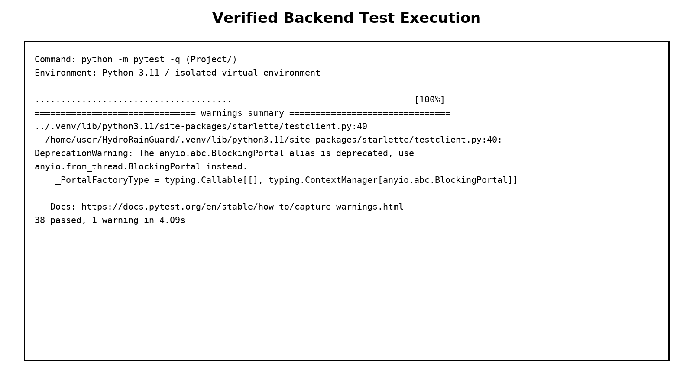
Figure 7.3: Verified backend test execution output
Legend: final pytest output shows 38 passed.
Table 7.5: Defect log and resolution
| Defect | Impact | Resolution |
|---|---|---|
| No table on fresh clone | First assessment returned 500 | Lifespan init_db + regression test |
| Coordinate input focus loss | Fields unusable | Hoisted input components; getValues |
| Savings mismatch | PDF and charts disagreed | Monthly first-flush allocation |
| 99-year sentinel | False payback value | Nullable payback and warning |
| AI/SCS-CN claim gap | Review risk | Implemented AHP and SCS-CN; corrected wording |
| PDF test DB setup | 5 PDF tests failed | Temporary DB with TestClient lifespan |
8 RESULTS AND DISCUSSION
8.1 Experimental Setup and Scenarios
Five scenarios were executed through the real API using the same software version. The Pune residence uses a 100 m2 RCC roof, four occupants, loamy soil, 50 m2 open space, 15 m groundwater depth and a 700 mm annual override. The Mumbai scenario uses a 500 m2 metal roof with 2300 mm rainfall, sandy soil and 300 m2 open space.
The green-roof scenario changes only roof material from RCC to GREEN. The Kolhapur scenario uses a 150 m2 RCC roof and Devanagari owner name to exercise PDF shaping. The Delhi scenario uses a 1000 m2 RCC roof, clay soil, 400 m2 open space, deeper groundwater and a higher tariff. These cases test roof material, rainfall, soil, scale and language sensitivity.
Table 8.1: Experimental scenarios
| Scenario | Rain (mm) | Roof / material | Soil / depth | Special purpose |
|---|---|---|---|---|
| Pune residence | 700 override | 100 m2 RCC | Loamy / 15 m | Reference case |
| Mumbai large roof | 2300 override | 500 m2 metal | Sandy / 20 m | High rainfall |
| Pune green roof | 700 override | 100 m2 green | Loamy / 15 m | Material sensitivity |
| Kolhapur | Grid | 150 m2 RCC | Loamy / 12 m | Devanagari PDF |
| Delhi campus | 780 override | 1000 m2 RCC | Clay / 30 m | Scale and low infiltration |
8.2 Reference Pune Assessment
The reference assessment produced 63.0 KL annual runoff from 700 mm rainfall, a runoff coefficient of 0.90 and a peak rate of 0.0775 m3/hr. After first-flush deduction, harvestable volume is 43.0 KL. Recharge potential is 24.5 KL/year, equivalent to 67.1 L/day, and the feasibility score is 55/100 with a semi-confined aquifer classification.
The results dashboard presents these values as summary cards and detailed tabs. The overview also displays the rainfall source, climatology period and SCS-CN cross-check. Because the same response object powers the PDF, AR dimensions and charts, there is no divergence between displayed outputs. The assessment ID supports reload and sharing.
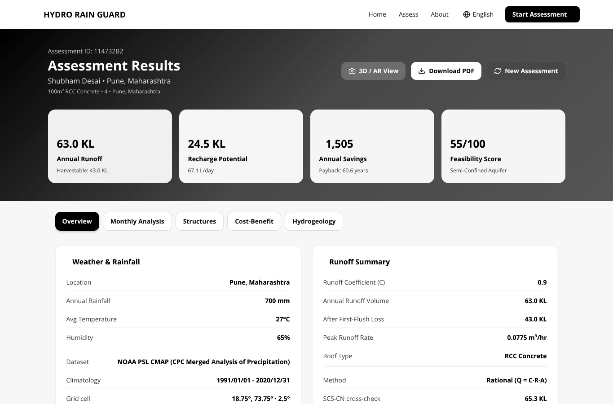
Figure 8.1: Results dashboard - overview
Legend: summary cards show runoff, recharge, savings and feasibility score.
8.3 Monthly Rainfall and Runoff Analysis
The CMAP-derived monthly distribution is strongly monsoonal. Rainfall rises from 14.5 mm in May to 157.7 mm in June, peaks at 206.7 mm in July and remains high in August and September. Rational-method runoff follows the same pattern, peaking at 18.6 KL in July. This seasonality is important because storage sizing cannot be based on annual total alone.
The results dashboard plots rainfall and runoff on dual axes, while the report chart separates them into two panels for black-and-white printing. The monthly series is also used to allocate first-flush loss and compute monthly savings. This keeps the annual summary consistent with the time distribution shown to the user.
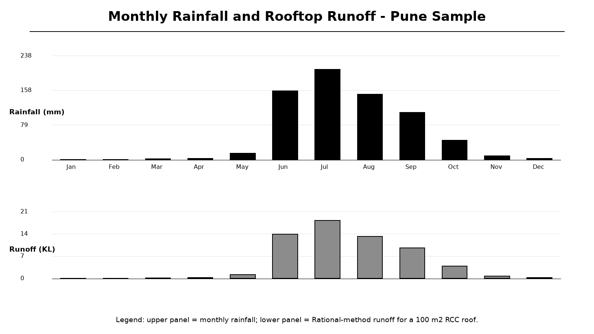
Figure 8.2: Monthly rainfall and rooftop runoff
Legend: upper panel is rainfall in mm; lower panel is runoff in KL.
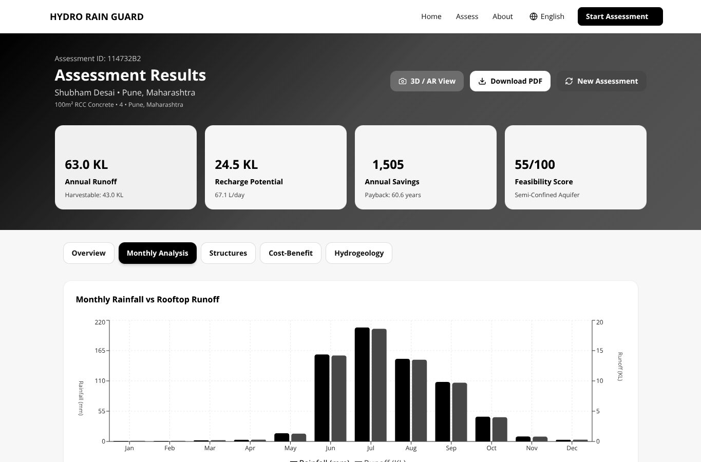
Figure 8.3: Results dashboard - monthly analysis
Legend: interactive bars use the same monthly response values.
8.4 Rational and SCS-CN Cross-Check
The SCS-CN method produced 65.3 KL annual runoff for the Pune sample, 3.7 percent above the Rational result of 63.0 KL. Monthly values differ more in low-rainfall months because initial abstraction suppresses SCS-CN runoff until rainfall exceeds the threshold. This behaviour is expected when the method is applied to monthly totals rather than individual storms.
Reporting both methods is scientifically preferable to presenting a single unexplained number. The user can select the primary method for economics while still seeing the alternative. The current implementation does not calibrate CN values to local roof condition or rainfall intensity, so the cross-check is treated as an uncertainty indicator rather than a validated design standard.
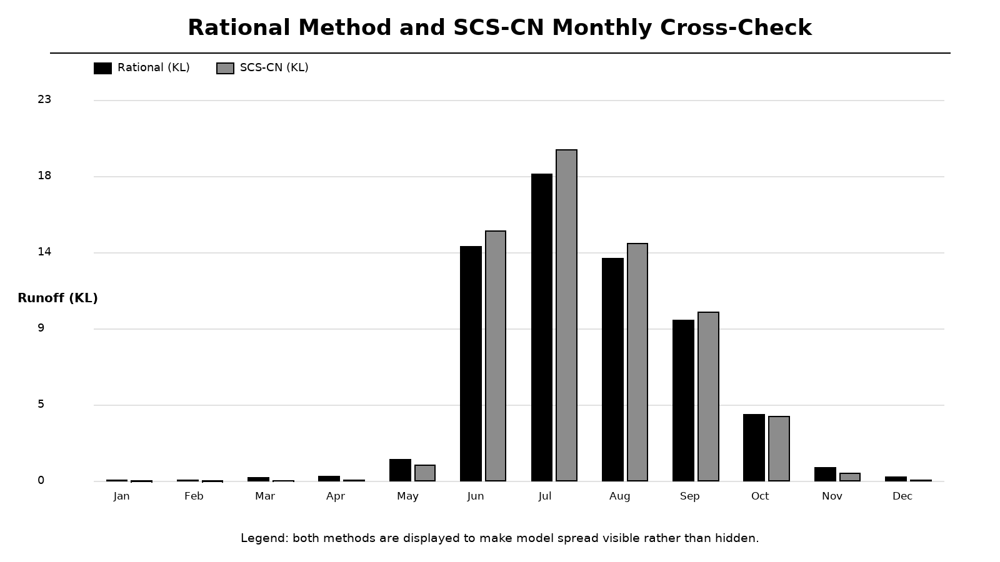
Figure 8.4: Rational method and SCS-CN monthly cross-check
Legend: black bars are Rational method; grey bars are SCS-CN.
Table 8.2: Runoff method comparison
| Metric | Rational | SCS-CN |
|---|---|---|
| Annual runoff | 63.0 KL | 65.3 KL |
| Difference | Baseline | +3.7% |
| Low-rainfall months | Proportional to rainfall | Zero below initial abstraction |
| Primary use | Default costing basis | Cross-check and alternative basis |
| Calibration | Roof coefficient | Curve number and initial abstraction |
8.5 Structure Recommendation Results
The AHP engine ranked rooftop storage tank first at 93.0/100, followed by soak pit at 72.8, recharge pit at 69.0 and recharge well at 51.8. The percolation tank was excluded because 50 m2 of open space is below the hard physical threshold. Each recommendation includes dimensions, installation notes and normalised criterion utilities.
The ranking is consistent with the site: a moderate-yield roof and limited open space favour storage and small infiltration structures. The recharge well remains feasible because it bypasses low-permeability surface soil, but its deeper-drilling cost and lower depth utility reduce its score. Returning the full AHP audit trail allows an engineer to challenge or replace the pairwise judgements.
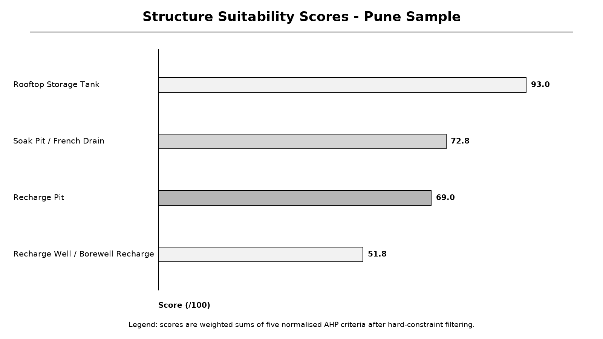
Figure 8.5: Structure suitability scores
Legend: bars are weighted sums of five normalised criteria, scaled to 100.
Table 8.3: Recommended structures and dimensions
| Rank | Structure | Score | Key dimensions |
|---|---|---|---|
| 1 | Rooftop Storage Tank | 93.0 | 16.2 m3; diameter 3.21 m; depth 2 m |
| 2 | Soak Pit / French Drain | 72.8 | Diameter 1 m; depth 1.5 m |
| 3 | Recharge Pit | 69.0 | 1.5 m x 1.5 m x 2 m; layered filter |
| 4 | Recharge Well | 51.8 | 250 mm diameter; depth 20 m |
| - | Percolation Tank | Filtered | Requires at least 100 m2 open space |
8.6 Cost-Benefit and Sensitivity
For the Pune reference case, estimated installation cost is Rs. 53,000, annual savings Rs. 1,505, recharge value Rs. 429, maintenance Rs. 1,060 and net annual benefit Rs. 874. Payback is 60.6 years and ten-year ROI is -83.5 percent. The dashboard displays a warning that the system does not repay its capital cost within ten years at the selected tariff.
This result is not a contradiction of rainwater harvesting; it shows that direct monetary savings at Rs. 35/KL are small for a 100 m2 roof. The model is sensitive to tariff, roof area and rainfall. Users can raise the tariff to represent tanker water or avoided pumping costs, while the report preserves the chosen value. Environmental benefits such as flood reduction are reported but not fully monetised.
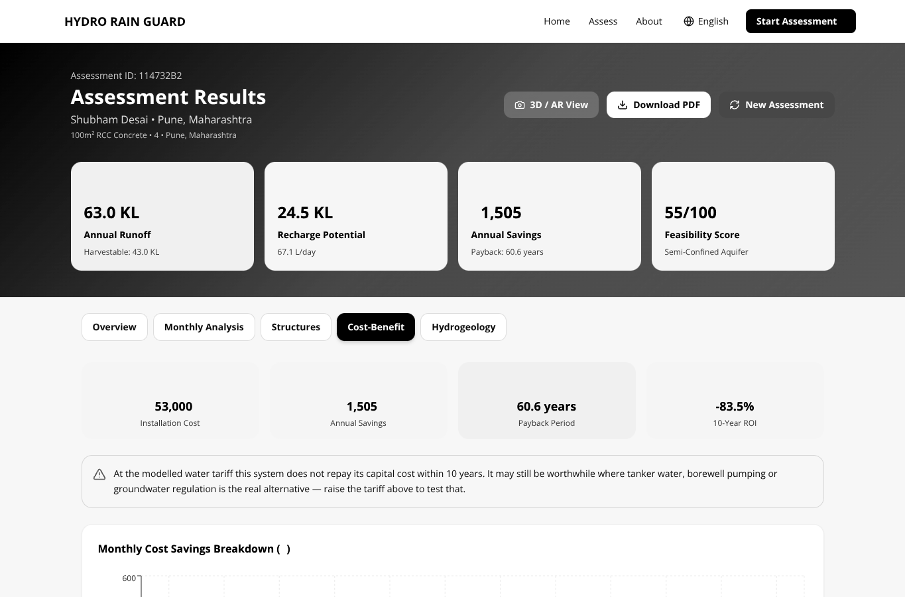
Figure 8.6: Results dashboard - cost-benefit tab
Legend: warning explains the ten-year economic viability criterion.
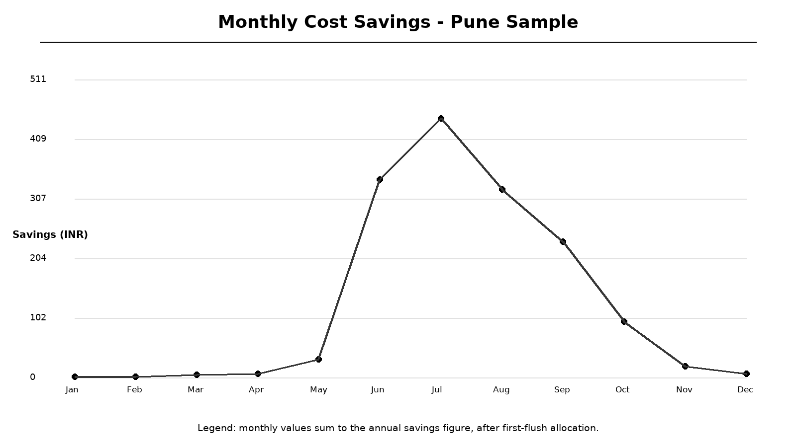
Figure 8.7: Monthly cost savings
Legend: monsoon months dominate the annual savings series.
8.7 Scenario Comparison and Discussion
The five scenarios demonstrate that roof area, rainfall and roof material dominate runoff volume. The green roof produces far less harvestable water than RCC at identical rainfall. Mumbai's larger roof and higher rainfall produce much greater runoff and a shorter payback, while the Delhi campus illustrates how clay soil and deep groundwater alter recharge suitability even with a large catchment.
The results also reveal the limitation of coarse rainfall grids. A local override is essential in orographic regions such as the Western Ghats. The system therefore exposes dataset, grid resolution and override status rather than presenting rainfall as exact. Overall, the objectives of integrated computation, transparent ranking, visualisation and reporting are met, but field validation and high-resolution hydrogeological data remain necessary before construction decisions.
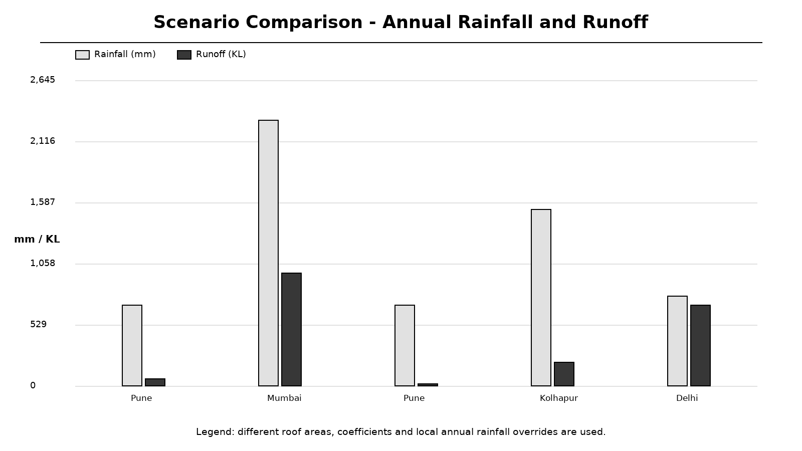
Figure 8.8: Scenario comparison - rainfall and runoff
Legend: each pair shows annual rainfall and computed runoff.
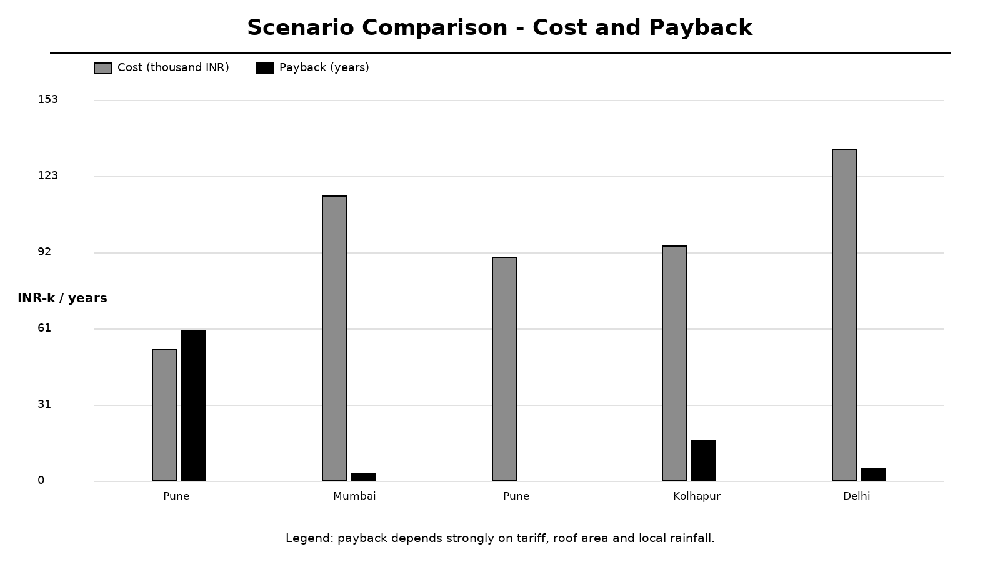
Figure 8.9: Scenario comparison - cost and payback
Legend: payback is highly sensitive to tariff, roof area and rainfall.
9 OTHER SPECIFICATIONS
9.1 Advantages
The principal advantage is integration. A single validated request produces rainfall, runoff, recharge, structure ranking, dimensions, economics, hydrogeology, charts, PDF and 3D geometry. This removes duplicated arithmetic and ensures that every output refers to the same assessment. The system also records data provenance and exposes model uncertainty through a second runoff method.
Additional advantages include offline-capable climatology, a local annual rainfall override, deterministic and auditable AHP, multilingual output, responsive UI, shareable assessment IDs, automatic table creation, graceful degradation when optional APIs fail and a test suite that protects the end-to-end workflow. The architecture is modular enough to replace rainfall data or recommendation criteria without rewriting the entire application.
Table 9.1: Advantages and user value
| Advantage | User value |
|---|---|
| Integrated workflow | One input produces all feasibility outputs |
| Dual runoff methods | Visible cross-check and uncertainty |
| AHP audit trail | Reviewable and replaceable judgements |
| Provenance fields | Dataset, period, resolution and override status |
| 3D/AR and charts | Better understanding for non-specialists |
| Automated PDF | Consistent documentation |
| 38 automated tests | Regression protection |
9.2 Limitations
The rainfall climatology is 2.5 degrees and represents 1991-2020 monthly means, not real-time station rainfall. Annual override improves the total but cannot correct monthly distribution. Soil infiltration is represented by lookup values rather than field infiltration tests. Recharge assumes 120 rainy days, eight hours per day and 70 percent efficiency. No groundwater modelling, water-quality analysis or structural safety certification is performed.
AHP is deterministic multi-criteria decision support, not a learned AI model. The pairwise weights are engineering priors and should be reviewed for each region. WebXR immersive AR requires a compatible Android device and secure origin; the desktop 3D view is universally available. Production deployment should use PostgreSQL because SQLite on serverless filesystems is ephemeral. Field validation and expert approval remain necessary.
Table 9.2: Limitations and mitigation
| Limitation | Effect | Mitigation / future work |
|---|---|---|
| Coarse 2.5-degree grid | Local rainfall error | IMD 0.25-degree grid or gauge |
| Lookup infiltration rates | Recharge uncertainty | Field infiltration tests |
| Monthly SCS-CN approximation | Storm-intensity error | Daily/event rainfall data |
| No trained ML model | No learned prediction | Collect labelled datasets |
| AR device dependence | Not all users see immersive mode | Desktop 3D fallback |
| SQLite on serverless | Persistence may vanish | PostgreSQL/Neon in production |
| No water-quality model | Potability unknown | Laboratory testing and treatment |
9.3 Applications
The system can support preliminary feasibility assessment for homes, apartments, educational campuses, small commercial buildings and municipal awareness programmes. Engineers can use the PDF as a structured starting point for detailed design. Educators can use the visualisations to demonstrate rainfall-runoff relationships, recharge structures and the effect of roof material or tariff assumptions.
Researchers can replace the rainfall raster, coefficients, AHP matrix or cost tables while preserving the API contract. Local governments could adapt the framework for ward-level screening, provided that local hydrogeological datasets and regulatory rules are added. The same architecture can also be extended to IoT sensor validation and predictive maintenance in future work.
Table 9.3: Application contexts
| Context | Use | Required adaptation |
|---|---|---|
| Individual residence | Estimate tank and recharge options | Local rainfall and soil data |
| Housing society | Compare roof-scale alternatives | Actual tariff and maintenance costs |
| Campus / institution | Screen multiple buildings | Batch assessment interface |
| Consultancy | Prepare preliminary report | Expert review and structural design |
| Municipality | Awareness and hotspot screening | High-resolution GIS layers |
| Teaching / research | Demonstrate hydrological models | Calibration datasets |
10 PROJECT PLAN
10.1 Phases and Timeline
The project was executed in sixteen relative weeks grouped into eight overlapping work streams. Early weeks focused on literature review, problem definition and requirements. Middle weeks produced architecture and core backend services. Later weeks added frontend pages, rainfall raster, AHP, PDF, 3D/AR, multilingual support, testing, deployment and report preparation.
The iterative approach allowed findings from testing to feed back into requirements. For example, the need for a local rainfall override emerged from the coarse-grid limitation; the need for nullable payback emerged from economic sensitivity; and the need for admin-token protection emerged from security review. The Gantt chart uses relative weeks rather than invented calendar dates.

Figure 10.1: Project phase timeline
Legend: W denotes a relative project week; all phases are marked complete for Stage II.
10.2 Work Allocation
The project team consisted of four students under the guidance of Dr. Dipali H. Patil. Work was divided by technical domain while maintaining shared code review responsibilities. Shubham Desai focused on hydrological modelling and backend integration; Siddhesh Mahadik on GIS data and map interaction; Kaushal Agale on recommendation logic and results; Omkar Kshirsagar on 3D/AR and frontend presentation.
All members contributed to literature survey, testing, documentation and report preparation. The division of labour is indicative of primary ownership rather than exclusive contribution; the final repository is the result of integrated work. The guide reviewed the research direction, paper structure, methodology and validation expectations.
Table 10.1: Work allocation
| Team member | Primary responsibility | Deliverables |
|---|---|---|
| Mr. Shubham Desai | Hydrology and backend | Services, API, calculations |
| Mr. Siddhesh Mahadik | GIS and data | Rainfall grid, map picker, provenance |
| Mr. Kaushal Agale | Recommendation and results | AHP, charts, cost-benefit |
| Mr. Omkar Kshirsagar | Frontend and AR | UI, 3D/AR, multilingual support |
| Dr. Dipali H. Patil | Guidance and review | Research direction and validation |
10.3 Current Stage-II Status
At the end of Stage II, all planned software modules are implemented. The frontend is publicly deployed at the URL provided by the team. The backend exposes the full assessment and reporting API. The rainfall raster, AHP engine, cost model, multilingual PDF, database lifecycle, 3D/AR route and automated tests are present in the repository.
Verification status is 38/38 backend tests passing and a successful Next.js production build. The survey paper associated with the project is accepted for ICICIS 2026 under Paper ID 195; the official acceptance proof and institution-approved plagiarism report are to be inserted in the appendices by the students. No publication date, volume, DOI or plagiarism score has been invented in this report.
Table 10.2: Stage-II completion status
| Item | Status | Evidence |
|---|---|---|
| Survey paper | Accepted | Paper ID 195 / ICICIS 2026; proof to be inserted |
| Backend implementation | Completed | FastAPI services and 38 tests |
| Frontend implementation | Completed | Production build succeeded |
| Deployment | Live frontend | Vercel URL provided by team |
| Database | Implemented | SQLite local / PostgreSQL path |
| Documentation | Completed | This Stage-II report and README |
| Plagiarism report | Pending attachment | Official report to be inserted |
11 CONCLUSIONS AND FUTURE WORK
11.1 Conclusion
The project successfully converted the conceptual HYDRO RAIN GUARD framework into a working, testable decision-support system. It addresses the research gaps identified in the survey by combining gridded rainfall data, hydrological computation, multi-criteria recommendation, interactive visualisation and automated reporting in a single reproducible workflow. The system does not merely monitor water; it supports feasibility assessment and design communication.
The implementation demonstrates that a transparent deterministic model can be more appropriate than an unvalidated machine-learning model for early-stage engineering decisions. By exposing inputs, coefficients, methods, weights and provenance, the system allows experts to challenge every result. The generated PDF and 3D/AR views make the same technical information accessible to non-specialist users.
Table 11.1: Objective achievement
| Objective | Achievement |
|---|---|
| Review recent methods | Seven core studies and technology taxonomy analysed |
| Automate runoff and recharge | Rational, SCS-CN, first-flush and soil-limited recharge implemented |
| Use GIS-centric rainfall | CMAP raster, bilinear interpolation and override implemented |
| Provide intelligent ranking | AHP with CR audit and per-criterion scores implemented |
| Improve visualisation | Dashboard charts and scaled 3D/AR implemented |
| Automate reporting | Multi-page multilingual PDF implemented |
| Verify system | 38 backend tests and frontend build passed |
11.2 Critical Evaluation
The solution is fit for its intended purpose as a screening and educational tool. It is not a certified engineering design package. The strongest design decisions are service separation, mirrored TypeScript/Pydantic contracts, explicit provenance, dual runoff methods and an auditable AHP model. The most important technical limitation is the coarse rainfall grid, followed by simplified soil and recharge assumptions.
The choice of FastAPI, Next.js and ReportLab was appropriate: the backend supports typed asynchronous APIs, the frontend supports static generation and responsive interfaces, and the PDF toolkit supports structured reports. The decision to avoid a trained ML model avoided unsupported claims. The remaining work is primarily data resolution, field validation, production hardening and continuous integration rather than a redesign of the core architecture.
Table 11.2: Critical evaluation
| Criterion | Assessment |
|---|---|
| Functional completeness | All Stage-II modules implemented |
| Scientific transparency | Methods, coefficients and provenance exposed |
| Usability | Wizard, charts, multilingual UI and PDF |
| Reliability | 38 tests and graceful weather fallback |
| Deployment readiness | Frontend deployed; production DB hardening pending |
| Research contribution | Integration of survey gaps into working tool |
| Main limitation | No field calibration or high-resolution GIS layers |
11.3 Limitations
The limitations can be grouped as data, model, deployment and validation constraints. Data limitations include coarse climatology and lookup-based soil properties. Model limitations include monthly SCS-CN approximation, fixed first-flush assumptions, simplified recharge duration and AHP weights based on expert priors. Deployment limitations include serverless SQLite persistence and WebXR device requirements.
Validation limitations are significant: no physical rooftop installation has been monitored to compare predicted and observed runoff, no pumping test has verified recharge, and no structural design check has been performed. Therefore, the output must be treated as an indicative feasibility report. The system explicitly recommends expert review and water-quality testing before construction.
Table 11.3: Consolidated limitations
| Category | Limitation | Priority for future work |
|---|---|---|
| Data | 2.5-degree CMAP grid | High |
| Hydrology | Monthly rather than event-based SCS-CN | Medium |
| Hydrogeology | Generic soil infiltration values | High |
| Decision model | Fixed AHP judgements | Medium |
| Deployment | SQLite on serverless | High |
| AR | WebXR device dependence | Low |
| Validation | No field measurements | High |
11.4 Future Scope
Short-term work should configure PostgreSQL in production, add CI for pytest and next build, and strengthen authentication for stored assessments. Medium-term work should replace the coarse climatology with IMD or CHIRPS high-resolution rainfall, add soil and land-use GIS layers, and support daily rainfall for event-scale SCS-CN calculation. Long-term work should integrate IoT level sensors and rain gauges for model calibration.
Further research may explore drone-based rooftop area extraction, deep-learning rainfall forecasting, predictive maintenance of filters, life-cycle environmental valuation and municipal-scale batch assessment. Immersive AR can be validated on WebXR devices with hit-testing and geospatial anchoring. These enhancements would preserve the existing API while improving spatial resolution, empirical validation and operational reliability.
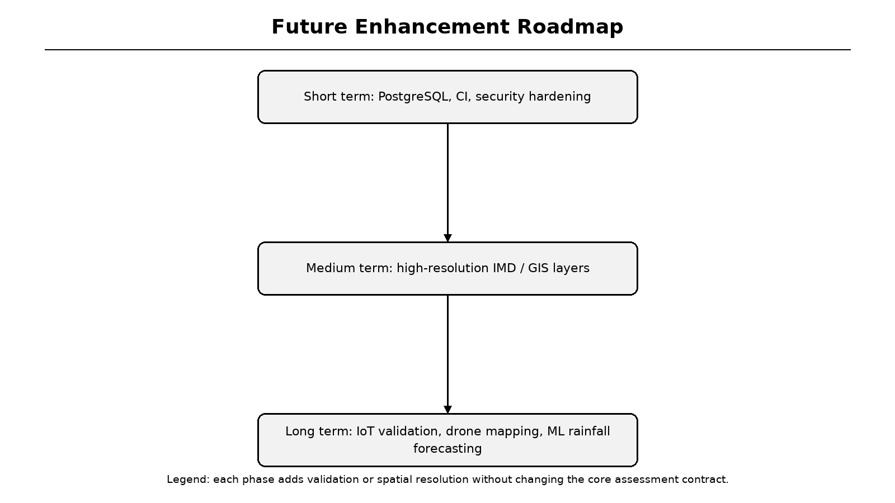
Figure 11.1: Future enhancement roadmap
Legend: short-, medium- and long-term improvements are arranged vertically.
APPENDIX A
A.1 Survey Paper Details
The survey paper is titled "Review of Hydrological Models and GIS Applications in Artificial Recharge and Rooftop Harvesting Assessment". It was prepared by Shubham Desai, Kaushal Agale, Dr. Dipali H. Patil, Omkar Kshirsagar and Siddhesh Mahadik of the Department of Information Technology, JSPM's Rajarshi Shahu College of Engineering, Pune. The paper is accepted for ICICIS Conference 2026, ADYPU, under Paper ID 195.
The paper's abstract identifies groundwater depletion, impervious urban surfaces, manual hydrological design and weak visualisation as core problems. It proposes HYDRO RAIN GUARD as a conceptual framework combining real-time environmental data, hydrogeology, automated runoff calculation, intelligent recommendation, AR visualisation and report generation. This Stage-II report documents the working implementation of that framework.
Table A.1: Survey paper metadata
| Field | Value |
|---|---|
| Title | Review of Hydrological Models and GIS Applications in Artificial Recharge and Rooftop Harvesting Assessment |
| Authors | S. Desai, K. Agale, D. H. Patil, O. Kshirsagar, S. Mahadik |
| Institution | JSPM's Rajarshi Shahu College of Engineering, Pune |
| Conference | ICICIS Conference 2026 - ADYPU |
| Paper ID | 195 |
| Status | Accepted |
| Proof | Official acceptance letter to be inserted by the students |
A.2 Survey Methodology, Findings and Gap Mapping
The survey followed a systematic literature review of 2021-2025 studies from IEEE Xplore, Springer, ScienceDirect and Google Scholar. Selection considered relevance to hydrological analysis, GIS planning, intelligent decision support and visualisation. Duplicate records, non-English publications and unrelated studies were excluded. The final synthesis compared seven core studies by technology, contribution and limitation.
The paper identified six research gaps: isolated technologies, hydrological models without spatial intelligence, GIS without AI or interactive visualisation, AI forecasting without complete workflows, AR without feasibility assessment, and manual intervention with static reporting. Table A.1 maps those gaps to the implemented modules. This mapping is the conceptual bridge between the accepted survey paper and the Stage-II implementation.
Table A.2: Research gap to implementation mapping
| Research gap | Evidence | Implemented module |
|---|---|---|
| Limited real-time data integration | Lu, Mane, Deshmukh | Data acquisition + CMAP grid |
| Manual runoff computation | Lu, Mane | Hydrology processing engine |
| Limited intelligent recommendation | Doorn, Deshmukh | AHP feasibility engine |
| Limited interactive visualization | Hansen | 3D/AR module |
| Lack of integrated framework | All reviewed studies | Integrated architecture |
| Static reporting | Lu, Mane | PDF report generator |
APPENDIX B
B.1 Implementation Paper and Project Details
The implementation report is represented by this BE Project Work - II document and the accompanying project repository. It converts the conceptual framework into FastAPI services, a Next.js frontend, a CMAP rainfall raster, AHP ranking, cost-benefit analysis, 3D/AR visualisation and a multilingual PDF generator. The repository README records setup instructions, formulas, endpoints and environment variables.
The official acceptance proof for the associated conference paper and any implementation-paper certificate should be inserted on this page or immediately after it. No certificate number, publication date, DOI or page range is fabricated in this report. The students should attach the documents supplied by the conference or institution before final submission.
Table B.1: Implementation and publication details
| Item | Detail |
|---|---|
| Implementation title | HYDRO RAIN GUARD: INTELLIGENT RAINWATER HARVESTING AND ARTIFICIAL GROUNDWATER RECHARGE ASSESSMENT SYSTEM |
| Repository | https://github.com/Shubham13112004/HydroRainGuard |
| Deployed frontend | https://hydro-rain-guard-mhus.vercel.app/ |
| Survey paper status | Accepted, ICICIS 2026, Paper ID 195 |
| Implementation paper | Stage-II project report / repository evidence |
| Verification | 38 backend tests; Next.js production build |
| Documents to attach | Acceptance letter, implementation paper proof if issued |
APPENDIX C
C.1 Plagiarism Check Report
The institute instructions require a plagiarism check report to be attached. The official report must be generated using the institution-approved tool or an accepted open-source similarity service. It should include the report title, similarity percentage, date, tool name and the checked document. Those values are not available to the report generator and therefore are not invented here.
Insert the signed or system-generated plagiarism report immediately after this page. If the report is a separate PDF, print it and include it as the next page of the bound copy. The students should ensure that the similarity percentage and sign-off satisfy the department's current submission rules.
Table C.1: Plagiarism report attachment record
| Field | Value to be completed |
|---|---|
| Tool / service | ____________________________ |
| Report date | ____________________________ |
| Similarity percentage | ____________________________ |
| Checked document | BE Project Work - II Report |
| Student sign-off | ____________________________ |
| Guide sign-off | ____________________________ |
| Official report | Attach immediately after this page |
APPENDIX D
D.1 Sample Generated Assessment Report
The figure on this page is the first page of a real PDF generated by the implemented /api/report endpoint. The sample uses a Devanagari owner name and location, demonstrating that HarfBuzz shaping renders conjuncts and matras correctly. The report includes project metadata, executive summary and rainfall provenance.
The full generated PDF is saved with the project evidence as sample_report.pdf. It contains additional pages for monthly rainfall and runoff, hydrological formulas, recommendations, AHP audit trail, cost-benefit, hydrogeology and installation notes. Latin text remains searchable, while Devanagari is drawn as vector outlines for visual correctness.
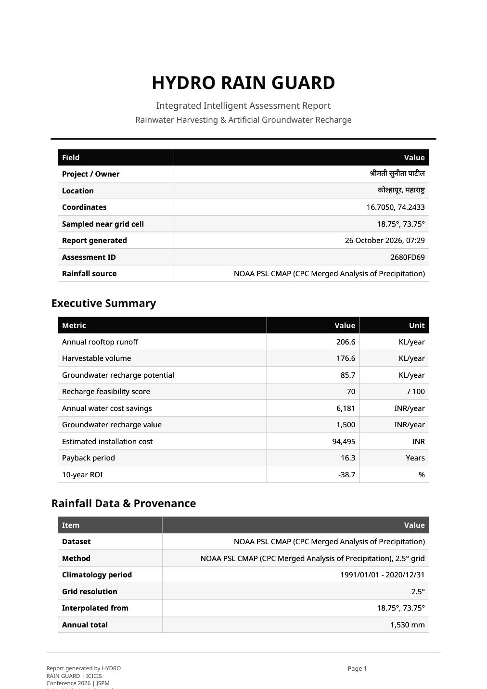
Figure D.1: First page of generated multilingual PDF report
Legend: the owner name and location are rendered in correctly shaped Devanagari.
APPENDIX E
E.1 Detailed Test and Build Evidence
The backend verification command is run from the Project directory: python -m pytest -q. The final output shows 38 passed tests and one dependency deprecation warning. The frontend verification command is run from Project/frontend: npm run build. The build output confirms successful compilation, type checking and static generation of all routes.
The two figures below reproduce the captured console output. Detailed test case tables appear in Chapter 7. The temporary database used by the report generator is separate from the development database, so sample assessments do not pollute the local application state. The evidence images are monochrome to comply with the institute's illustration rules.

Figure E.1: Backend pytest execution evidence
Legend: final result is 38 passed.
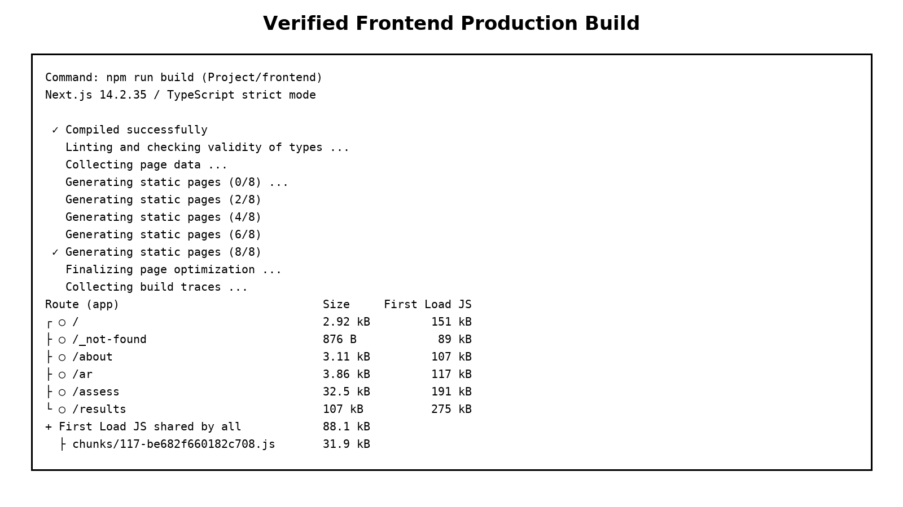
Figure E.2: Frontend production build evidence
Legend: Next.js compiled successfully and generated static pages.
APPENDIX F
F.1 Use Case Details and Deployment Status
UC-01 Create Assessment begins when the user opens the wizard. Preconditions are a modern browser and valid site data. The main success path includes rainfall preview, input validation, API computation, persistence and navigation to results. Postconditions are a stored AssessmentResponse, a hydro_result localStorage entry and an assessment ID in the URL. Alternate paths display validation or backend errors without discarding entered values.
UC-03 Retrieve Assessment uses the ID from a shared link; UC-04 Download PDF streams a report from stored JSON; UC-05 Inspect 3D/AR reads assessment dimensions; UC-06 Change Language updates UI strings through the i18n provider; UC-07 Initialise Database requires an admin token in production. The final table summarises the deployment status and remaining submission attachments.
Table F.1: Deployment and submission status
| Item | Status | Note |
|---|---|---|
| Frontend deployment | Live | https://hydro-rain-guard-mhus.vercel.app/ |
| Backend API | Implemented | Run locally or host with configured proxy |
| Production database | Recommended | Use PostgreSQL/Neon, not serverless SQLite |
| Paper acceptance proof | To be inserted | No details invented |
| Plagiarism report | To be inserted | Institution-approved report required |
| Roll / exam numbers | To be filled | Blank fields provided on cover/certificate |
| Stage-II implementation | Complete | Tests and build verified |
12 REFERENCES
[1] Central Ground Water Board, Manual on Artificial Recharge of Groundwater, Ministry of Water Resources, Government of India, New Delhi, 2007.
[2] Bureau of Indian Standards, Guidelines for Rainwater Harvesting, IS 15797, New Delhi, 2008.
[3] Q.-O. Lu, R. Bahramloo, J. Rodrigo-Comino, J. Wang, A. Talebi, Q. T. P. Tran, A. Ghahramani, and M. Sepehri, "Evaluating the impact of roof rainwater harvesting on hydrological connectivity and urban flood mitigation," Results in Engineering, vol. 25, Art. no. 104022, 2025. doi:10.1016/j.rineng.2025.104022.
[4] S. R. Mane and V. K. Patil, "Review on design of rooftop rainwater harvesting in Nimgaon Village: A case study of Junnar Tahsil," International Journal of Engineering Research & Technology, vol. 10, no. 5, pp. 112-115, 2021.
[5] Council on Energy, Environment and Water, Rainwater Harvesting: Artificial Recharge of Groundwater in India, New Delhi, 2023.
[6] N. Doorn, "Artificial intelligence in the water domain: Opportunities for responsible use," Science of the Total Environment, vol. 755, Art. no. 142561, 2021. doi:10.1016/j.scitotenv.2020.142561.
[7] P. Preeti and A. Rahman, "Application of GIS in rainwater harvesting research: A scoping review," Asian Journal of Water, Environment and Pollution, vol. 18, no. 4, pp. 29-35, 2021. doi:10.3233/AJW210040.
[8] S. Ali, Y.-F. Sang, F. Pilla, V. P. Singh, and A. Dilawar, "Implementing urban rainwater harvesting systems: Multiple potential performances, barriers, challenges, solutions, and future perspectives," Renewable and Sustainable Energy Reviews, vol. 218, Art. no. 115793, 2025.
[9] FastAPI Developers, FastAPI Documentation, version 0.115, 2024. [Online]. Available: https://fastapi.tiangolo.com
[10] Vercel Inc., Next.js 14 App Router Documentation, 2024. [Online]. Available: https://nextjs.org/docs
[11] T. Deshmukh et al., "A review on recent trends in rooftop rainwater harvesting technologies," International Journal for Research in Applied Science & Engineering Technology, vol. 10, no. 5, pp. 1180-1183, 2022. doi:10.22214/ijraset.2022.42428.
[12] "Design and analysis of rooftop rainwater harvesting with borewell recharge system for Nashik apartments," International Research Journal of Modernization in Engineering Technology and Science, Apr. 2025.
12.1 References (Continued)
[13] D. Hari and R. R. Kasa, "A geospatial approach for rooftop rainwater harvesting potential assessment in Hyderabad City, Telangana, India," Grassroots Journal of Natural Resources, vol. 8, no. 2, pp. 701-716, 2025. doi:10.33002/nr2581.6853.080233.
[14] India Meteorological Department, Yearly Gridded Rainfall Data, Climate Research Services, Pune, 2024.
[15] NOAA Physical Sciences Laboratory, CPC Merged Analysis of Precipitation (CMAP) monthly climatology, 1991-2020, public-domain dataset.
[16] T. L. Saaty, The Analytic Hierarchy Process, New York: McGraw-Hill, 1980.
[17] L. H. Hansen, P. Fleck, M. Stranner, D. Schmalstieg, and C. Arth, "Augmented reality for subsurface utility engineering, revisited," IEEE Transactions on Visualization and Computer Graphics, vol. 27, no. 11, pp. 4119-4128, 2021. doi:10.1109/TVCG.2021.3106479.
[18] pmndrs, react-three-fiber and drei Documentation, 2024. [Online]. Available: https://docs.pmnd.rs
[19] W3C Immersive Web Working Group, WebXR Device API, 2024. [Online]. Available: https://immersive-web.github.io/webxr/
[20] Pydantic Developers, Pydantic V2 Documentation, 2024. [Online]. Available: https://docs.pydantic.dev
[21] Meta Platforms, Inc., React 18 Documentation, 2022. [Online]. Available: https://react.dev
[22] Tailwind Labs, Tailwind CSS Documentation, version 3.4, 2024. [Online]. Available: https://tailwindcss.com/docs
[23] Recharts Team, Recharts 2.x Documentation, 2024. [Online]. Available: https://recharts.org
[24] ReportLab Inc., ReportLab PDF Toolkit User Guide, version 4.2, 2024. [Online]. Available: https://www.reportlab.com/docs/reportlab-userguide.pdf
12.2 References (Continued)
[25] HarfBuzz Project, HarfBuzz Text Shaping Engine Documentation, 2024. [Online]. Available: https://harfbuzz.github.io
[26] Google Fonts, Noto Sans and Noto Sans Devanagari, SIL Open Font License 1.1, 2024. [Online]. Available: https://fonts.google.com/noto
[27] Pytest Developers, Pytest 8.3 Documentation, 2024. [Online]. Available: https://docs.pytest.org
[28] Encode OSS, HTTPX Documentation, version 0.28, 2024. [Online]. Available: https://www.python-httpx.org
[29] C. McLeod, Zod 3 TypeScript-first Schema Validation, 2024. [Online]. Available: https://zod.dev
[30] OpenWeather Ltd., OpenWeatherMap Current Weather Data API documentation, 2026. [Online]. Available: https://openweathermap.org/current
[31] USDA Natural Resources Conservation Service, Urban Hydrology for Small Watersheds, Technical Release 55 (TR-55), 2nd ed., 1986.
[32] React Hook Form Team, React Hook Form Documentation, 2024. [Online]. Available: https://react-hook-form.com
[33] Framer B.V., Framer Motion Documentation, 2024. [Online]. Available: https://www.framer.com/motion
[34] V. Agafonkin et al., Leaflet 1.9 Documentation, 2023. [Online]. Available: https://leafletjs.com
[35] SQLAlchemy Authors, SQLAlchemy 2.0 Documentation, 2024. [Online]. Available: https://docs.sqlalchemy.org
[36] OpenStreetMap contributors, OpenStreetMap and Nominatim geographic data services, 2026. [Online]. Available: https://www.openstreetmap.org
12.3 Bibliography
[B1] Government of India, National Water Policy and urban water conservation guidance, Ministry of Jal Shakti, 2012/2020 updates.
[B2] A. K. Jain, River Training and Water Resource Management in India: Case Studies, New Delhi: Central Water Commission, 2019.
[B3] S. T. Foster et al., "Urban groundwater recharge: A review," Hydrogeology Journal, vol. 28, pp. 1-18, 2020.
[B4] World Meteorological Organization, Guide to Climatological Practices, WMO-No. 100, 2018.
[B5] GitHub, Inc., GitHub Actions Documentation, 2026. [Online]. Available: https://docs.github.com/actions
[B6] Vercel Inc., Vercel Deployment and Environment Variables Documentation, 2026. [Online]. Available: https://vercel.com/docs